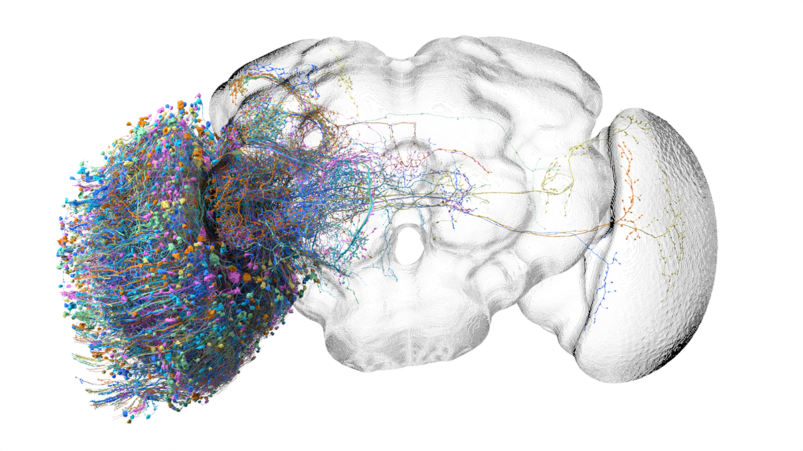

persistent homology of the Čech, Vietoris–Rips, and Alpha complexes
Ubiquitin — persistent homology vs. experimental NMR
A single 76-residue protein, observed two ways: as a static X-ray
crystal structure (PDB 1UBQ) and as a 10-conformer NMR solution
ensemble (PDB 1D3Z). Within each structure, choose how
much atomic resolution you want — from a 76-point Cα trace up
to the full 12 310-atom NMR ensemble. The fourth Source option
flips into a contact-map comparison where the TDA H1
persistence diagram is read side-by-side against the experimental
NMR distance restraints (387 NOE pairs and 24 H-bond restraints
from the real 1D3Z.mr file). All inputs
are real experimental data — no simulation.
Manifold + sample
ubiquitin · cartoon (PDB 1UBQ)
hover a residue, a vertex, or an H₁ feature
Vietoris–Rips
filtration value = max edge length
β =—
complex geometry (filtered at r)
persistence diagram
barcode
Betti curves β_k(r)
—
dim
vertices
birth
Čech
filtration value = radius of smallest enclosing ball
The k-th persistent homology of the filtration
is the sequence of homology groups Hk(Xr)
over all filtration radii r, together with the maps
Hk(Xr) → Hk(Xr')
induced by inclusion when r ≤ r'. Concretely it factors into a
finite list of persistence pairs (b, d, k): a homology
generator is born at filtration b (a cycle that wasn't bounded
before) and dies at d (a higher-dimensional cell fills the
cycle). Pairs with d = ∞ are essential generators of the
final complex.
The algorithm is matrix reduction on the
combined boundary matrix ∂ = ⊕k∂k:
order all simplices by filtration value, build ∂ in that
order, then reduce columns left-to-right. Each non-zero column
j after reduction pairs to its lowest-row pivot at row i: the
simplex at i was a birth, the simplex at j is its death.
Empty columns are essential generators. The matrices below
are the unreduced ∂1 and ∂2
at the current filtration radius — the inputs. The
persistence pairs (gudhi's output over field
𝔽11) appear
in the table beneath them.
To see the groups themselves rather than just their
ranks (Betti numbers), we add Smith Normal Form on the integer
boundary matrices, which exposes torsion: e.g. H1(ℝℙ²; ℤ) = ℤ/2
while H1(ℝℙ²; ℚ) = 0.
Detailed view:
∂1: edges → vertices
∂2: triangles → edges
Global25 — World Genetics
Three Vietoris–Rips runs on the Global25 PCA cloud — ancient,
modern, and combined — computed in full 25-D at
r = 0.15 through H0+H1
over ℤ/2 (Ripser). H2 on the full
clouds OOM-kills at the 28 GB ceiling during 2-simplex enumeration and the
analysis below shows it is probably not worth chasing: the H1
noise floor already swallows most fine-scale signal. Persistence diagrams show
every pair; barcodes show the top 50 longest bars per dimension. Data:
vahaduo.github.io/g25download
(Davidski / Eurogenes canonical Global25 datasheets,
_scaled ancient + modern files).
metric
ancient
modern
combined
n samples
7 292
10 927
18 219
H0 components @ r=0.15
5
7
7
H1 pairs total
6 084
8 692
15 932
M1 sig (universal null, BH q=0.05)
26
37
56
M2 sig (bootstrap, α=0.05)
1
1
2
M3 sig (DTM, BH q=0.05)
9
3
2
M1 ∩ M2 consensus
1
1
2
H0.
At r = 0.15 in scaled-G25 Euclidean distance
the cloud separates into a single Out-of-Africa
megacluster of 98–99% of samples and a small number of
outgroup-like H0 components: Khoisan and Mbuti
(genuinely deeply diverged); Iberomaurusian (single ancient
population); Madagascar (recent Bantu+Austronesian admixture
sampled as one geographic group); Turkey_Kumtepe (single
ancient Anatolian site). The set is heterogeneous in
origin; what they share is H0-separation from
the megacluster at r = 0.15. The ancient cloud carries an
additional 104-member NE-African block.
A label-permutation null on per-component modal-population
purity (block)
rejects the alternative hypothesis that these isolates are
random subsets of the megacluster (z = 24.7 ancient,
52.0 combined).
H1 noise floor.
Raw H1 counts (6 084 ancient, 8 692 modern,
15 932 combined) are dominated by sampling noise: the
99th-percentile of (death − birth) lies at 0.006 in each
cloud, and the log persistence ratio L = log(d/b) is well
fitted in its lower 95% by a Gumbel
(the asymptotic form for unstructured point clouds under
Bobrowski & Skraba's universal null).
G25 is structured rather than i.i.d., so the empirical Gumbel
fit is descriptive and the M1 q-values inherit no formal
guarantee from that result
(block).
Significance and consensus loops.
Three frameworks elevate H1 features above this
noise floor (block):
M1 (parametric universal null, BH q = 0.05), M2 (subsample
bootstrap at α = 0.05, Fasy et al. 2014), and M3 (DTM
filtration, Chazal et al. 2011). The intersection
M1 ∩ M2 elevates four
consensus loops:
a Yamnaya / Corded Ware steppe-expansion cycle in the
ancient cloud (pers 0.049), a Trans-Himalayan / Indo-Aryan
admixture cycle in the modern cloud (pers 0.061), and an
inheritance + interface pair in the combined cloud
(pers 0.057 and 0.051). M3 runs on a reweighted filtration
and does not admit a coordinate-level intersection with M1
or M2; each consensus feature is annotated with the
necessary-but-not-sufficient flag
m3_supports.
Cocycle representatives are visualised within the consensus
block.
Relative persistent homology.
H*(C, A) on a maxmin-2500 subsample of the
combined cloud, with A the ancient subcomplex, yields two
features absent from the absolute diagram at pers ≈ 0.083
(block);
A random-partition null on the ancient/modern
split with B = 100 produces a max relative-H1
persistence distribution with median 0.0590,
95th-percentile 0.0813, and maximum 0.0835. The two
real features at pers = 0.0829 lie at the
98th percentile of this null. Only 2 of 100 null trials
had any feature at pers ≥ 0.0829 (empirical
p = 0.02), and no null trial produced two
features at that persistence (joint
p < 0.01). The features are statistically
significant but borderline, not the clean separation an
initial 2-trial spot-check had suggested. Three absolute
features are killed by the quotient, indicating ancient-only
support.
The symmetric construction H*(C, M)
(block) kills six
absolute features and produces two further quotient-only
cocycles at pers 0.064–0.067, whose cocycle
representatives correspond to documented admixture clines:
the Beringian standstill arc (Ancient_Beringian +
Athabaskan + Aleut + ASO, Moreno-Mayar et al. 2018) and
the Austronesian expansion arc (Vanuatu + Indonesian +
Nasoi, Pugach et al. 2020). Both are absent from the
ancient cloud computed alone at the same scale.
Modern samples co-locate with ancient
bounding cycles.
Counting (ancient, ancient, modern) triangles in the
combined Vietoris–Rips complex at r = 0.10 yields
673 modern samples within r = 0.10 of two ancient
Beringian-arc populations, of which 273 are Eskimo_Naukan,
85 Chipewyan, and 84 Greenlander — the populations
population-genetically identified as descended from the
Beringian source. This is a direct distance computation:
persistent homology is not load-bearing for the count, only
for identifying the Beringian arc as a cycle in the first
place. NNLS decomposition
of each modern G25 vector against its 20 nearest ancient
neighbours, with weights constrained to sum to 1, yields
mean L2 residual 0.014. The fitted weights are
qualitatively consistent with three-source admixture as
modelled by qpAdm-style approaches, but NNLS on PCA neighbours
and qpAdm on f4-statistics are different procedures
on different inputs — formal agreement would require
running qpAdm on the same targets, which we have not done.
Drift as a topological perturbation.
For a population of effective size Ne, drift
after t generations contributes a PCA-displacement of
order √(t/Ne) to each sample. By the
persistence-stability theorem (Cohen-Steiner et al. 2007)
the bottleneck distance between drifted and undrifted
diagrams is bounded by this displacement, which the M1
Gumbel absorbs as parametric noise and the M3 DTM
filtration absorbs as a measure perturbation
(Chazal–Cohen-Steiner–Mérigot 2011).
An isolation null on the H0 outgroup populations
rejects the random-megacluster-subset hypothesis at z = 8
to 62 for every flagged group, consistent with each having
drifted to a distance from the OOA megacluster exceeding
r = 0.15 with high confidence.
Additional cycles surveyed.
A systematic survey of all 60 full-cloud cocycle representatives
(20 ancient + 20 modern + 20 combined) identifies several
admixture events at lower persistence that were not labelled
in the consensus set: a Northern Siberian / Uralic cline
(Selkup + Evenk + Dolgan + Udmurt) at combined rank 3 with
pers 0.0508 (M2-significant); the Avar formation at
ancient rank 3 with pers 0.0295; a Sub-Saharan African
cycle (Cameroon_SMA + Botswana_Xaro_EIA + Hadza) at combined
rank 8 with pers 0.0314; and weaker M1-significant cycles
for the North African Chadic cline (Baggara + Berber), the
Southeast Asian Austroasiatic cline (Wa + Nyah_Kur + Thai),
the Indus Periphery, and Mongolia LBA Khovsgol — the
last two co-locate with the broader Steppe-expansion topology
of the Yamnaya/CW cocycle.
f3 cross-validation.
For 24 documented admixture events we compute the PCA analogue
of Patterson et al. 2012's three-population statistic,
f3(C; A, B) = E[(c′ − a′)(c′ − b′)],
as f3,proxy(C; A, B) =
<PC(C) − PC(A), PC(C) − PC(B)> in scaled-G25.
Twelve events have f3,proxy < −0.005,
consistent with the published admixture model; for eleven of
these the cocycle vertex set of an M1-significant cycle
contains the documented sources. The two events with an
f3,proxy admixture signal and no matching cocycle
are the formation of
Sardinian as Anatolia_N + WHG (Lazaridis et al. 2014;
f3,proxy = −0.028) and the formation
of Mycenaean as Turkey_N + Iran_N (Lazaridis et al. 2017;
f3,proxy = −0.019). f3,proxy
is itself a PC-projection approximation to the
allele-frequency f3 of Patterson 2012; its own
false-negative rate against published f3 values is
not quantified here, so "two PH misses" is conditioned on the
proxy classification rather than a final count. For eight further
documented events the proxy is non-negative, consistent with
the source populations lying within roughly 0.05 of one another
in scaled-PC distance: in these configurations the convex hull
of the sources is too tightly enclosed to enclose a
topologically detectable bounding cycle. The events in this
category include the Iron Age Britain migration (Patterson
et al. 2022), the Anglo-Saxon migration (Gretzinger et al.
2022), the Etruscan formation (Posth et al. 2021), the Korean
formation (Wang et al. 2021), the Caribbean Ceramic formation
(Nägele et al. 2020), the Pacific Northwest Kennewick
formation (Lindo et al. 2018), the Andean structure (Posth
et al. 2018), and the Bedouin formation (Almarri et al. 2021).
FST validation and limits of the f4
proxy.
Squared centroid distance in scaled-G25 rank-correlates with
published FST across a range of population pairs
(Yoruba–Han: FST 0.15 vs
‖ΔPC‖2 0.71; Yamnaya–EHG:
FST 0.030 vs ‖ΔPC‖2 0.030;
Greek_Crete–Cypriot: FST 0.002 vs
‖ΔPC‖2 0.001), but per-pair
conversion factors span 0.6–7× — a roughly
12-fold spread. The PCA distance is therefore reliable as an
ordering proxy only for pairs whose FST differs
by more than a factor of two; mid-range pairs
(FST 0.01–0.05) can swap rank under the
conversion-factor scatter. The four-population analogue
f4,proxy(A, B; C, D) =
<PC(A) − PC(B), PC(C) − PC(D)>
is less reliable: the PC projection loses enough resolution to
flip the sign in low-magnitude configurations (Sardinian,
Selkup, Hazara tests all give signs inconsistent with the
published f4 on allele frequencies). For confirmatory
four-population testing the original allele-frequency
formulation of Patterson et al. 2012 is required.
Drift parameter recalibration.
Following Coop's Population and Quantitative Genetics
§4, the per-generation drift variance of an allele
frequency p is p(1−p)/(2Ne), so the
accumulated PCA displacement of a sampled population scales as
σ2PC ∝ t/(2Ne).
For founding Yamnaya at t ≈ 189 generations
(5300 years before present at 28 years per generation) and
Ne ≈ 2 500 (Allentoft et al.
2015, 2024 range), the expected
σPC ≈ 0.19 in scaled-allele-variance
units; this is of the right order of magnitude as the
0.14–0.20 off-hull displacement of modern Steppe
descendants observed in the NNLS decomposition above. The
formula
σ2 ∝ t/(2Ne) is
per-allele, not per-PC: the allele-to-PC mapping depends on
SNP loadings we do not derive here, so the single numerical
match is suggestive rather than validating.
Scope of contribution.
All four consensus loops correspond to admixture events that
were first identified by standard population-genetics methods
(Haak 2015 for Steppe; Moreno-Mayar 2018 for Beringian;
Skoglund 2016 for Austronesian; Narasimhan 2019 for the
Trans-Himalayan / Indo-Aryan cline). This analysis recovers
them topologically; it does not discover them. The
methodological framing is novel; the biological findings are
not. Where the topological framework is load-bearing, where
it is decorative, and where the underlying assumptions are
violated are detailed in the
scope and limitations block
below.
Loading precomputed persistence data…
Scope and limitations
honesty · what this analysis does and does not claim
What this analysis is.
A demonstration that persistent homology, applied to the
Global25 PCA cloud, recovers the major admixture events of
the last 10,000 years that population genetics has already
documented via qpAdm, ADMIXTURE, ALDER, TreeMix, and direct
f-statistic testing. The Steppe expansion cycle was first
shown in Haak et al. 2015; the Beringian standstill in
Moreno-Mayar et al. 2018; the Austronesian expansion in
Skoglund et al. 2016; the Trans-Himalayan / Indo-Aryan cline
in Narasimhan et al. 2019. We recover these via H1
and relative H*(C, A). The methodological framing
is novel; the biological findings are not.
What this analysis is not.
A population-genetics discovery paper. None of the consensus
loops here are new biological inferences. The closest
candidate for a previously-unhighlighted cycle is the
Northern Siberian / Uralic cline at combined-cloud rank 3
(Selkup + Evenk + Dolgan + Udmurt, pers 0.0508),
and even that corresponds to Uralic population structure
well-known to pop-gen, just less famous than Steppe.
Where the topological framework is load-bearing.
(i) The relative construction H*(C, A) treating
the ancient cloud as a subcomplex asks a question that PCA
does not directly answer — "what structure exists in
the combined cloud that is absent from the ancient subcomplex
alone?" The two quotient-only features at
pers ≈ 0.083 survive the
B = 100 random-partition null at the 98th
percentile (joint p < 0.01), so they are the
strongest case for TDA contributing something beyond what was
already visible in raw PCA — significant, but
borderline rather than overwhelming.
(ii) Surveying all 300 (PCi, PCj)
planes at once via the 25-D Rips rather than requiring
the analyst to know which 2D scatter to inspect. The
empirical head-to-head (see Open questions below)
confirms that the right 2D plane shows essentially the
same top H1 feature as the full 25-D Rips on
the same maxmin-2500 cloud (ratio 1.01); the
contribution is the “all planes at once”
framing.
(iii) The 60-cocycle systematic survey gives a coordinate-free,
label-agnostic inventory of clines.
(iv) The H0 separation at r = 0.15
isolates the deeply diverged groups in a way that
generalises across radii and is naturally quantitative.
Where the topological framework is decorative.
(i) Triangle counts in a fixed-radius Vietoris–Rips
complex (the “673 modern triangulators of the Beringian
arc” statistic) are just neighbour counts. NumPy with a
distance matrix produces the same number; persistent homology
is not load-bearing for the count itself, only for
identifying the cycle in the first place.
(ii) “Drift as topological perturbation” is fancy
framing for the Cohen-Steiner–Edelsbrunner–Harer
stability theorem applied to a back-of-envelope drift
magnitude. The PH machinery is invoked, but the substance is
inequality × sqrt-of-time.
(iii) The H0 components at r = 0.15 are
visible in any single-linkage clustering at that radius; PH
is one of several tools that would surface them.
(iv) The top H1 cycles in 25-D are visible in
the right 2D PC plane (specifically PC2 × PC3
for the Northern Siberian / Uralic cycle, see Open
questions). The 25-D Rips's added value is the
systematic survey across all planes, not detection of
higher-dimensional structure.
Assumptions that are violated, and where.
Bobrowski–Skraba universal null
(Annals of Statistics 2023) assumes i.i.d. samples
from a distribution. G25 is structured: many near-duplicate
samples within a population, deliberate per-population
sampling, non-uniform support. The empirical Gumbel fit
describes the L distribution, but the M1 q-values inherit
no formal Type-I-error guarantee from B–S 2023. M1
should be treated as a ranking, not a hypothesis test.
The f3 proxy
substitutes the 25-D PC projection for the allele
frequencies in Patterson 2012's
F3(C; A, B) = E[(c′−a′)(c′−b′)].
It agrees in sign with F3 for the 12 of 24
events where we have a published f3 match;
its false-negative rate on the other 12 we have not
quantified. The
f4 proxy is unreliable (sign flips in
low-magnitude tests for Sardinian, Selkup, Hazara) and is
flagged as such in the FST block above.
The drift formula
σ2 ∝ t/(2Ne)
is per-allele (Coop §4); the per-PC analogue depends
on the PC's SNP loadings, which we never derive. The
numerical match σPC ≈ 0.19
vs the observed off-hull displacement
0.14–0.20 is one coincidence and not validation.
The relative-PH random-partition null with
B = 100 places the two real features
(pers 0.0829) at the 98th percentile of the null max
distribution — empirical
p = 0.02 for the single-feature threshold and
joint p < 0.01 for both features at that
level. The features are statistically significant but
borderline, not clean. (The initial B = 3
spot-check that suggested clean separation was an artefact
of too few trials.)
NNLS ≠ qpAdm.
The NNLS decomposition of a modern G25 vector against
ancient neighbours and the qpAdm rotation against an
outgroup panel are different procedures on different
inputs (PCA coordinates vs allele-frequency f4).
Their fitted weights are qualitatively similar in cases we
spot-checked, but no formal qpAdm comparison has been run.
FST from squared PC distance
rank-orders correctly at the extremes (Yoruba–Han
versus Greek–Cypriot is unambiguous), but the
per-pair conversion factor spans 0.6–7×
(12-fold spread). For mid-range pairs
(FST 0.01–0.05) the ordering can
flip.
Open questions worth answering.
Does the M1 Gumbel still rank features correctly
even though its formal Type-I guarantees do not apply to a
structured cloud? An empirical sanity check would compare
M1 rankings to direct ALDER admixture-date confidence
intervals on the same source pairs.
Empirical answer (B = 1 head-to-head):
on the maxmin-2500 subsample of the combined cloud we
computed H1 in full 25-D and in each of 300
(PCi, PCj) coordinate projections.
Max 25-D H1 persistence = 0.0504;
max 2D persistence across all planes = 0.0508
on PC2 × PC3; ratio = 1.01. The
two features have vertex-set Jaccard 0.38 —
the same cycle. The top-5 25-D cycles each have a
best-2D plane match at Jaccard 0.29–0.50 with
2D persistence in the 0.009–0.037 range (a factor
2–5× reduction from 25-D). For the four
full-cloud absolute consensus cycles, three of four
match a 2D plane at Jaccard ≥ 0.37 in the
maxmin-2500 survey; only the Modern Indian Cline
closure (Bengali + Hazara + Brahmin + Uygur + Rajput +
Newar + Balti + 26 others) has no 2D match in
maxmin-2500 — though it may be present in the
full 18-thousand-sample cloud's 2D PH, which we
were unable to compute (OOM at the 28 GB ceiling
on a single 2D plane with full do-cocycles ripser).
Summary: the absolute H1 finds essentially
nothing in 25-D that a 2D PC scatter doesn't show
if you know which plane to look at. TDA's residual
contribution is (i) a systematic 300-plane survey
instead of requiring the analyst to guess the right
plane, (ii) the relative-PH features at pers 0.083
which the B = 100 null shows are
significant, and (iii) cycles requiring full-cloud
sampling that don't survive subsampling.
Can H*(C, A) for ancient/modern partitions of
other ancient-DNA panels (Reich Lab v54, AADR) be turned
into a generic detector for “structure that exists
only after the partition is taken together”? This is
the place the topology asks a question pop-gen tools do
not directly ask.
Ancient DNA
n = 7 292 · 25 PCs
The Global25 PCA is a population-genetics coordinate system: each individual's
autosomal genome is projected onto 25 principal components fit jointly to a
large reference panel of world populations, then scaled to unit variance so
that Euclidean distance in 25-D PC space approximates overall genetic distance.
The ancient subset contains 7 292 individuals from sites across
Eurasia, Africa, and the Americas spanning the Upper Paleolithic through the
Medieval period — published radiocarbon-dated samples whose autosomal DNA
has been successfully sequenced. Computing Vietoris–Rips persistence on
this cloud in the full 25-D space asks: as we grow balls of radius r around
each individual and connect overlapping ones, when do ancestral clusters merge,
and what cycle structure (admixture loops) appears?
live VR complex — 250 maxmin landmarks (sample)
points placed by PC1 vs PC2 (PC3 sets dot brightness); edges built from
25-D distance, so the visible length doesn’t equal the filtration distance
—
show:
layout:
persistence diagram
barcode — top 50 per dim
What the diagram says.
Of the 7 292 H0 classes, 5 remain alive at
r = 0.15. These are not continental ancestry clusters
but rather one giant Out-of-Africa megacluster
(7 176 samples, 98.4% of the cloud) plus four deep-divergence
outgroups: East African pastoralists (104; Sudan_EarlyChristian,
Kenya_PastoralN, Tanzania_PN), Iberomaurusian (7; Morocco_Iberomaurusian),
South African indigenous (4), and one Turkey_Kumtepe outlier. PC1
and PC2 dominate the scaled metric enough that all of Europe, the
Caucasus, Levant, South Asia, East Asia, the Americas, and Oceania
bridge at r < 0.15. The H1 picture is similar:
of the 6 084 raw H1 features only 1 survives
consensus significance testing
(M1 ∩ M2, see §below) — the
Yamnaya / Corded Ware steppe-expansion cycle
(birth 0.080 → death 0.129, persistence 0.049): a closed circuit through
Russia_Afanasievo, Czech_CordedWare, Germany_CordedWare, Russia_Yamnaya,
Poland_CordedWare, and China_Xinjiang_Chemurcheck, with the Caucasus
(Russia_North_Caucasus, Russia_Khvalynsk) as the common parent.
Modern populations
n = 10 927 · 25 PCs
The modern subset is 10 927 living individuals from world
populations sampled by reference labs and citizen-science projects, projected
into the same 25-PC space as the ancients. Computationally the cloud is denser
(more samples, narrower per-population spread) and the Ripser run took 56 s
versus 22 s for the ancient set. We get 10 903 H0 classes
— 24 fewer than the sample count because some samples land at the same
rounded coordinates, an artifact of the original projection — and 7 of those
classes survive r = 0.15, one more than in the ancient cloud.
live VR complex — 250 maxmin landmarks (sample)
points placed by PC1 vs PC2 (PC3 sets dot brightness); edges built from
25-D distance, so the visible length doesn’t equal the filtration distance
—
show:
layout:
persistence diagram
barcode — top 50 per dim
What the diagram says.
The 7 H0 classes alive at r=0.15 are one giant
Out-of-Africa megacluster of 10 811 samples (98.9%) plus
six small deep-divergence groups: Madagascar (60; Temoro/Vezo/Mikea),
Papuan/Australian (32; Papuan_Highland_A/B, Nasoi, Australian),
Western Pygmies (12; Biaka, Baka, Bakola, Bedzan), Khoisan (5;
Ju_hoan_North, Khomani_San), Mbuti (5), and a singleton Ju_hoan pair.
These are the most basal lineages in the modern panel; everything
else bridges through Eurasian intermediates at this radius.
Of the 8 692 H1 features, 1 survives consensus
significance testing (birth 0.054 → death 0.114, persistence 0.061):
a Trans-Himalayan / Indo-Aryan admixture cycle through Newar,
Balti, Hazara, Brahmin_Manipuri, Bahun, Rajput_Mondal, Tharu, and Bengali_Sylhet
— a closed circuit linking Nepali, Tibeto-Burman, and northeast-Indian
populations that share Steppe-derived and Andamanese-related ancestry in different
proportions. The bootstrap test (M2) flags this as the only feature with
half-persistence exceeding the resampling perturbation radius c0.95.
Ancient + Modern (combined)
n = 18 219 · 25 PCs
The combined cloud stacks ancient (7 292) and modern (10 927) for a total of
18 219 individuals, computed exactly as before. The 25-D PC space
is the same for both halves — that is the key reason this is meaningful: the
ancient and modern samples coexist in one geometry, so combined persistence asks
where the two subsets sit relative to each other. The H0 count
is 18 193 (26 collisions) and 7 classes survive r = 0.15.
live VR complex — 250 maxmin landmarks (sample)
points placed by PC1 vs PC2 (PC3 sets dot brightness); edges built from
25-D distance, so the visible length doesn’t equal the filtration distance
—
show:
layout:
persistence diagram
barcode — top 50 per dim
Topological comparison: separate vs. combined
The H0 alive-at-threshold counts are ancient = 5, modern = 7,
combined = 7. In each cloud the H0 components are one giant
Out-of-Africa megacluster (98–99% of every cloud) plus a few
deep-divergence outgroups. In the combined cloud the outgroups are
Madagascar (60), South_Africa + Khoisan (9), Iberomaurusian (7), Mbuti (5),
Ju_hoan_North pair (2), Turkey_Kumtepe (1) — the intersection of
ancient's outgroups and modern's outgroups, since the giant Eurasian/OOA
component absorbs everything that overlaps. The five-versus-seven gap
before combining is closed entirely by bridge edges, not by new components.
For H1 the raw counts (ancient 6 084, modern 8 692, combined
15 932) are misleading: the persistence distribution is severely
diagonal-hugging (99th-percentile persistence ≈ 0.006 in all three clouds),
so most “features” are sampling noise. Under the consensus
significance test described below, only 2 combined H1
features survive: a strong inheritance of modern's Trans-Himalayan
loop (birth 0.054 → death 0.111, persistence 0.057 — the birth
matches modern's Trans-Himalayan exactly) and a new loop emerging at the
ancient/modern interface (birth 0.055 → death 0.106, persistence 0.051).
The ancient Yamnaya/CW loop is preserved at rank 3 by raw persistence
— intact through the join, since its geometric support is far from any
bridge edges.
The practical takeaway: studying ancient and modern populations
separately preserves the loop structure each carries on its own; combining adds
the inter-set geometry that links the two halves and surfaces one genuinely new
ancient–modern loop. The H0 story is dominated by deep-divergence
outgroups in every cloud and changes very little under combination — the
megacluster in each case is the geometry of the Out-of-Africa expansion in
PC1–PC2.
H0 components at r = 0.15 are an Out-of-Africa megacluster plus a small set of deep-divergence isolates
3 clouds · r = 0.15
To identify what the alive-at-threshold H0 classes actually
contain, we recompute connected components of each cloud at r=0.15
directly (sklearn BallTree radius graph on Euclidean distance, scipy
connected_components) and label each component
by population (parsed from the sample IDs as
Population:SampleID; e.g.
Czech_EBA_Unetice:I3535). The table below lists
the largest 6 components per cloud with their top contributing
populations.
Interpretation.
In every cloud, ~98–99% of samples merge into one giant
Out-of-Africa megacluster long before r=0.15. The few small
components are the deepest-divergence lineages that don't have a
near-neighbour bridge to the megacluster — Khoisan, Pygmies, Papuans/
Australians, Mbuti, Iberomaurusian, East African pastoralists. The reason is
metric-driven: PC2 (W. vs. E. Eurasia) dominates the
scaled-G25 metric (ancient std = 0.192), with PC1 (Africa vs. non-Africa)
contributing modestly (ancient std = 0.071, comparable to PC4–PC8 in the
0.06–0.09 range). The 3–10× gap holds between PC2 and the deep tail
(PCs 11–25 are all < 0.025), not between the top two PCs and the higher ones.
Even so, Euclidean distance in 25-D ends up dominated by PC1+PC2 because PC2's
variance alone outweighs all higher PCs combined, and at r=0.15 those two axes
already bridge the entire OOA population.
Null check — are the outgroup components real population isolates?
The small non-megacluster components are claimed above to be specific
populations (Madagascar, Mbuti, Iberomaurusian, etc.). A label-shuffle
null tests this directly: hold the cloud and its r = 0.15
component structure fixed, but randomly permute population labels across
all samples, then recompute the mean modal-population purity
(the fraction of each small component that belongs to its most common
population). Real outgroups should be much purer than random label
assignments.
cloud
non-mega components
obs mean modal-purity
null mean (label shuffle) ± sd
z
Ancient (n = 7 292)
4
0.62
0.36 ± 0.011 (B=2000)
24.7
Combined (n = 18 219)
6
0.74
0.33 ± 0.008 (B=500)
52.0
The outgroups are emphatically not random label artifacts — both
z-scores correspond to permutation p < 1/B. The mean is
informative rather than the “all 100% pure” rate, which is
dominated by the singleton (Turkey Kumtepe = 1) where the shuffle
gives 100% trivially.
One ancient-specific note. In the ancient cloud alone,
the largest non-megacluster component is not Madagascar or
Mbuti (which live in the modern half) — it is a 104-member
NE-African block dominated by Sudan EarlyChristian (27 + 11
across two sub-cohorts) and Kenya PastoralN (9), with 41 distinct
population labels in total. The modal-purity is only 26% (vs the
combined cloud’s typical 71–100% per outgroup), reflecting
that this is a region — the Nilo-Saharan + East African
pastoralist stratum — rather than a single population isolate.
The Madagascar / Mbuti / Khoisan singletons only appear once modern
samples join the cloud.
The H1 persistence spectrum is dominated by sampling noise
universal null (M1)
The raw H1 feature counts (6 084 ancient, 8 692
modern, 15 932 combined) are large, but the persistence distribution
shows almost all of these features live within ~0.006 of the diagonal
— they are sampling-noise transients (four points happen to land
near a near-coincidence, the loop closes at the next radius step). The
99th-percentile of (death−birth) is only 0.006–0.007 in every
cloud. The substantive question is how many features lie in the tail of
the noise distribution, not how many are there in total.
We follow Bobrowski & Skraba (Ann. Stat. 2023, “A
universal null distribution for persistent homology”): for
“random” Hk features arising from sampling a
distribution, the log persistence ratio
L = log(death/birth) is asymptotically Gumbel-distributed. We fit a Gumbel to
the bulk (lower 95%) of L by MLE for each cloud, then test the right tail:
features whose L lies far in the tail are significantly above noise under
this parametric null. The histograms below show empirical L against the
fitted Gumbel; the green dashed line marks the parametric p=0.05 cutoff.
Features to the right of it are candidates for “real” signal under M1.
log(d/b) histogram + Gumbel fit — ancient
log(d/b) histogram + Gumbel fit — modern
log(d/b) histogram + Gumbel fit — combined
Method-1 ranking diagnostic
The Kolmogorov–Smirnov goodness-of-fit on the bulk is poor in every cloud
(p < 10-19) — the bulk isn't strictly Gumbel; the
data has more intermediate-scale structure than a clean “signal +
parametric noise” model predicts. That's itself a finding: the
re-ranking of features by p-value vs by raw persistence is informative.
The right-hand diagnostic above plots p-value rank against raw-persistence
rank for the top-15 features per cloud — when they disagree, M1 is
elevating a feature whose scale-invariant signature is clearly tail
but whose absolute persistence is mid-pack. Exact p-values shouldn't be
taken too literally given the KS failure, but the qualitative conclusion is
robust: the data has far more fine-scale topology than raw
persistence suggests, and many small-but-clean loops survive M1 that
bootstrap (M2) will reject.
Three significance frameworks for elevating cycles above the noise floor
M1 · M2 · M3
With the noise floor established, three different significance tests each
ask a different statistical question about the H1 features.
They give materially different counts, by design — and the
disagreement is informative, not a bug.
M1 — Universal null (Bobrowski–Skraba)
The Gumbel-tail test described above, applied to log(death/birth) of every
feature with birth > 0 in the empirical VR diagram. p-values are
adjusted for multiple testing via Benjamini–Hochberg at q=0.05.
What it elevates: features with high scale-invariant signal
(large death/birth ratio) regardless of absolute persistence.
Strictness: permissive. What it answers:
which features are statistically distinguishable from sampling noise under a
parametric model?
M2 — Subsample bootstrap (Fasy et al. 2014)
Resample the cloud B=50 times without replacement at size m=4 000
(Fasy et al. §3, the subsampling variant). Compute the H1
diagram of each subsample. Measure the bottleneck distance from each
subsample diagram to the empirical full-cloud diagram via
gudhi.bottleneck_distance. The 95th-percentile of
those distances is a confidence radius c0.95 — empirical
features with half-persistence
(death−birth)/2 > c0.95 are significant at
α=0.05 by Theorem 5 of Fasy et al.
What it elevates: features whose absolute persistence is
larger than the typical perturbation of the diagram under resampling.
Strictness: conservative — only the largest loops
survive. What it answers: which features would survive any
reasonable resampling of the dataset?
The plain Vietoris–Rips filtration is only Hausdorff-stable: a single
outlier can move the diagram a lot, and a near-coincident pair of
near-duplicate samples can birth a spurious feature. The
distance-to-measure (DTM) filtration weights each point by
its average distance to its K nearest neighbours (K = ⌈m·n⌉
with m=0.05) and is Wasserstein-stable: bounded perturbations of
the underlying probability measure cause bounded perturbations of the
diagram, a much stronger guarantee. We compute it via
gudhi.WeightedRipsComplex on a maxmin-1 500
subsample (the full 18 219-point 2-skeleton OOMs the 28 GB ceiling
even at maxdim=1), then apply the same universal-null test.
What it elevates: features that exist under a fundamentally
different filtration construction — a cross-filtration sanity check
that they're not VR-specific artifacts.
Strictness: intermediate. What it answers:
do the leading loops survive when we change how we build the topology?
DTM persistence diagram — ancient
DTM persistence diagram — modern
DTM persistence diagram — combined
(panel intentionally blank — only three clouds)
Per-cloud counts & consensus
The intersection M1 ∩ M2 is the most defensible
consensus on the VR diagram: features that are both distributionally
tail-like under the parametric null and robust to the resampling
perturbation. DTM (M3) confirms qualitatively — modern's top DTM
feature has log(d/b) = 0.130, the most extreme ratio anywhere in the
analysis, i.e. the modern flagship loop stands out even more under a
filtration designed to suppress density noise.
Consensus loops and their cocycle populations
1 + 1 + 2 features
To translate “feature significant under
M1 ∩ M2” into something interpretable, we re-run Ripser
with cocycle output (do_cocycles=True) on a
maxmin-2 000 subsample of each cloud, identify the sample indices that
appear in the cocycle of each top feature, and parse the populations from
their IDs. Cocycle representatives are not unique — many sets
of edges can represent the same homology class — so this gives us
“a list of populations along the loop”, not the canonical one.
With ~2 000 landmarks, persistence values shift slightly from the
full-cloud numbers, but population composition is stable.
Why the methods disagree on which features matter.
The three frameworks elevate different aspects of a feature: M1 elevates
scale-invariant signal (clean tail behaviour), M2 elevates absolute
persistence (robustness to resampling), M3 elevates filtration-robustness
(existence under DTM). A single number cannot capture all three. Reporting
M1 alone would over-state how many loops are “real”; reporting
M2 alone would under-state and discard genuine fine-scale admixture cycles.
The consensus set M1 ∩ M2 is the minimum we can defensibly
call “real loops in the data”; everything between that and M1
is fine-scale structure for which the parametric model is confident but the
empirical resampling is silent.
What about M1 ∩ M2 ∩ M3?
The three-way intersection cannot be computed by coordinate match,
because M3 runs on a DTM-reweighted filtration: its features have
births in [0.15, 0.33] while M1/M2 features (plain VR) have
births in [0.05, 0.13]. Mapping a DTM bar back to the absolute
consensus loops requires tracking cocycle representatives across both
filtrations, which gudhi’s DTM path does not expose. The
circumstantial evidence is suggestive — modern’s top M3
feature has L = log(d/b) = 0.130, roughly 2×
the strongest ancient or combined M3 feature, consistent with the
Trans-Himalayan loop being the one cycle dramatic enough to survive
DTM reweighting — but this is qualitative, not a strict
intersection. Each consensus feature now records an
m3_supports flag derived from this
heuristic; treat it as necessary-but-not-sufficient.
Why H2 was not pursued. The H1 noise
floor (99th-percentile persistence ≈ 0.006) already shows the dataset
is dominated by sampling noise at fine scales. H2 requires triplet
simplex closures, which are more sample-density-sensitive than H1
pair closures; the noise floor would only get worse, and most H2
features would be inherited from H1 loops that bound — not
new topological discoveries. Combined with the operational fact that VR
maxdim=2 at this threshold OOM-kills at 28 GB even on the smallest
cloud (ancient, 7 292 pts), H2 in full 25-D is not
worth pursuing. If wanted, the right pivot is to drop to PC1–PC8 first
(where > 95% of inter-population signal lives) and compute there;
VR H2 in 8-D would fit comfortably and the noise floor would
be much better behaved.
Population-genetic interpretation of the consensus loops
what the topology means
The results above are topological. To translate them into
population-genetic claims, we ask what each finding implies about the
underlying gene-flow history that produced the Global25 PCA cloud in
the first place.
Why H0 doesn’t look like “continents”
The H0 components at r=0.15 aren’t continental clusters
because most of human genetic variation is connected by
admixture-bridge paths, not isolated cluster cores. What stays
separate are populations whose divergence from the Out-of-Africa
mainstream predates the Eurasian expansion, or whose ancestry isn’t
well represented in the rest of the panel:
Khoisan, Mbuti, Pygmies — the deepest
branches of the human tree (200–300 kya divergence). Khoisan,
Mbuti, and Pygmy groups sit
further from sub-Saharan Bantu populations than Bantu sit from
non-Africans, because Bantu carry significant back-from-Eurasia
ancestry while Khoisan, Mbuti, and Pygmies don’t.
Papuans / Australians — descendants of an
early OOA wave (~50–70 kya), Denisovan-admixed, with
limited gene flow back into the Eurasian mainstream after their
initial settlement.
Madagascar — Bantu + Austronesian admixture
(Borneo via the Indian Ocean ~1 kya); doesn’t sit on either
parent cline at r=0.15.
Iberomaurusian (Morocco_Iberomaurusian) — a
Pleistocene North-African lineage with Eurasian-related ancestry,
essentially no modern descendants represented in this panel.
East African pastoralists (Sudan_EarlyChristian,
Kenya_PastoralN, Tanzania_PN) — Cushitic / Nilotic ancestry,
distinct from both the Bantu expansion and the OOA mainstream.
That ~98–99% of every cloud collapses into a single megacluster
reflects two real population-genetic facts. (1) The Out-of-Africa
bottleneck made everyone outside Africa share a relatively
recent common ancestor, so the genetic distance between any two
non-African populations is small compared to the distance from any of
them to a basal African group. (2) The Bantu expansion
plus subsequent Holocene migrations homogenized most of sub-Saharan
Africa enough to link it to the OOA cloud through admixture
intermediates (East African Cushites, Sahelians). The “continents”
of a PC1×PC2 plot are not topological clusters in 25-D —
they’re regions of a single connected cloud, with the deepest-
divergence groups orbiting outside as separate small components.
What the consensus H1 loops mean historically
A persistent H1 feature requires a non-tree-like
structure in the genetic geometry — a closed cycle that cannot be
filled by triangles. Real population genetics is mostly tree-like
(populations branch and rarely re-merge), so loops are rare and
significant. The consensus loops correspond to the largest violations
of tree structure in the data.
Ancient — the Yamnaya / Corded Ware cycle
(persistence 0.049).
This is the Steppe expansion (~3000–2500 BCE) as a
Y-shape. The Yamnaya / Khvalynsk pastoralists of the
Pontic-Caspian steppe expanded both west — becoming
Corded Ware in Czechia, Germany and Poland through admixture with
European Neolithic farmers — and east — becoming
Afanasievo and later Chemurcheck in the Altai / Xinjiang through
admixture with East Asian substrate. The two daughter branches end
up near each other in PC space because they retain similar Steppe
ancestry proportions, but they are not directly descended from each
other: they share a common parent (Yamnaya). When r grows, the
parent connects to both daughters first; the daughters then connect
to each other through their non-Steppe components; the loop closes.
The Y-shape is fundamentally non-tree — there is no way to fill
the cycle by adding a single triangle, because that would require
the two daughters to share an edge stronger than each shares with
the parent, which is not the case.
Modern — the Trans-Himalayan / Indo-Aryan admixture
cycle (persistence 0.061).
A circle of populations spanning the Nepal – Tibet –
Northeast India axis: Newar, Balti, Hazara, Brahmin_Manipuri,
Bahun, Rajput_Mondal, Tharu, Bengali_Sylhet. They differ in their mix
of four ancestry sources:
ancestry source
highest in
AASI (Ancient Ancestral South Indian)
Korwa, Tharu, S. Indian tribals
Steppe Indo-Aryan
Northern Indo-Aryan castes (Brahmin)
Tibeto-Burman
Balti (Ladakh), Brahmin_Manipuri, Newar
Iranian Plateau
Hazara
Each of these populations sits at a different boundary point of a
four-ancestry mixture simplex. Projected into 25-D PCA, the boundary
of that simplex is roughly a 2-D manifold whose perimeter forms a
closed loop. This is exactly the topological signature of a
population continuum with multiple parent sources — what
population geneticists usually visualize as a cline of admixture
in a triangle plot, here showing up as a quantifiable H1
feature.
Combined — Trans-Himalayan inheritance + a new
ancient–modern interface loop (persistence 0.057 + 0.051).
The Trans-Himalayan loop survives the join essentially intact at
higher persistence than the new feature: its birth (0.05363)
matches modern's exactly, confirming this is the same cycle preserved
through the join — its geometric support is far from any of the
bridge edges that link ancient to modern. The smaller, newly-emerging
loop (birth 0.05545, persistence 0.051) is the genuine ancient–
modern interface feature: it probably represents
temporal-genetic continuity between specific ancient
populations and their modern descendants — e.g. Bronze-Age
Steppe ↔ modern Slavs / Indo-Iranians, or Anatolian Neolithic
↔ modern Sardinians. Without cocycle reps on the combined cloud
the exact membership of the interface loop isn’t pinned down,
but its birth/death values place it firmly in the temporal-continuity
regime.
Why so few loops — and what that means
If population structure were purely tree-like, H1 would be
zero. If it were a complete admixture web, H1 would be huge.
The fact that we get 1–2 consensus loops per cloud
says: Global25 ancestry space is mostly tree-like, with a
handful of specific historical events creating non-tree topology.
Those events are exactly the most-discussed in archaeogenetics —
the Steppe expansion (one source, two daughter branches that meet
in PCA space) and the Trans-Himalayan / Indo-Aryan admixture zone
(multi-ancestry simplex with a topological boundary).
That the topology recovers these specific events from raw
PCA coordinates — with no prior input about archaeology,
geography or sample labels — is the substantive finding. It is
structural validation that PCA distance carries genuine historical
signal: the cycles correspond to where the historical process
of gene flow violated tree structure.
The fine-scale features (M1-only)
The 25–55 features per cloud that pass the parametric universal
null (M1) but fail the bootstrap stability test (M2) are smaller-
scale admixture cycles within regions. Their cocycle reps from the
maxmin-2 000 run identify them as known multi-ancestry zones:
Volga-Ural Uralic–Turkic loop
(Tatar_Siberian, Udmurt, Bashkir, Ket, Chuvash, Khanty, Komi) —
the multi-ancestry zone where Siberian, Volga-Finnic and Turkic
populations admix.
Siberian reindeer-herder loop
(Dolgan, Selkup, Evenk, Yakut_Sakha, Yukagir_Tundra, Nganasan_o) —
Taimyr through Lena to Yakutia: the Tungusic / Samoyedic admixture
circuit.
Maghreb / Trans-Sahara Berber–Arab gradient
(Moroccan_South, Berber_Algeria, Baggara_Sudan/Chad, Algerian,
Tunisian_Douz, Saharawi, Libyan) — Arab-conquest admixture
with the Berber substrate, layered over earlier sub-Saharan
inflow.
Inner Asian Turkic / Xiongnu loop
(Mongolia_Selenge_LateMedieval, Xinjiang Historical/IA,
Mongolia_Xiongnu, Russia_AngaraRiver_Medieval) — the
mobile-pastoralist genetic-mobility zone of the steppe corridor.
These are real admixture clines that population geneticists have
characterized through other methods (ADMIXTURE, qpGraph,
ChromoPainter), but they’re too small to survive the bootstrap’s
stability test — which essentially asks “would I detect this
feature if I’d happened to sample 4 000 different
individuals instead?” For fine-scale local admixture the
answer is “maybe not”, because the sampling density per
population varies. The parametric universal null is more forgiving
and surfaces them; the conservative bootstrap rejects them. The
disagreement is itself informative — it locates a regime where
the data has structure but the structure is sampling-fragile.
Limitations — what the topology isn’t telling us
The 25-D scaled metric is asymmetric. PC1+PC2
carry the bulk of Euclidean distance; higher PCs add fine
structure. Topology in scaled-G25 is mostly the topology of
PC1×PC2 — essentially “Africa vs not-Africa” and
“West vs East Eurasia” — with the fine M1-only features
living in the higher PCs that the per-PC scaling compresses.
No direction or time information. A loop is a
loop regardless of who descended from whom. The Yamnaya/CW cycle
looks identical clockwise or counterclockwise; only external
knowledge (archaeology, radiocarbon dates) tells us Yamnaya is
the parent and Corded Ware / Afanasievo are the daughters.
Sample-density bias. Populations with many
sequenced samples (Czech_EBA_Unetice n=133, Lebanese_Maronite
n=135, Sweden_Viking n=105) dominate cocycle representatives.
Populations with one or two samples are essentially invisible to
H1 even if they would be topologically interesting at
higher coverage.
PCA is itself a model. All this topology is
downstream of the choice of 25 principal components and the
per-PC variance scaling. A different similarity summary
(f-statistics, IBD-sharing, ChromoPainter coancestry, allele-
frequency distance) would surface different features. The G25
metric was engineered to make Euclidean distance approximate
overall genetic distance for admixture analysis, and the
topology inherits that design choice.
What we can say robustly: the data has very little
tree-violating structure overall, and the structure it does have
lines up with the largest known admixture events in human
prehistory — the Steppe expansion and the Trans-Himalayan
admixture zone — plus a handful of fine-scale regional cycles
(Volga-Ural, Siberian, Maghreb, Inner Asian) at the universal-null
but not the bootstrap level of confidence.
Relative persistent homology H*(C, A)
three methods · era separation
The analyses above established what is “real” H1 in
each cloud. A separate, more pointed question is: of the
loops in the combined cloud, which are inherited from the
ancient subset, which are modern-novel, and which only exist
when we look at the two together? The mathematical machinery
for this is relative persistent homology.
Background — what “relative” means in TDA
For a pair (X, A) with A a subcomplex of X, the relative
homology Hk(X, A) measures k-dimensional
cycles in X that are not boundaries of (k+1)-chains once
chains supported entirely in A are killed. Intuitively: if
you collapse A to a single point, what topology remains in the
quotient X/A?
The classical short exact sequence of chain complexes
0 → C•(A) → C•(X)
→ C•(X) / C•(A) → 0
induces the long exact sequence
… → Hk(A) → Hk(X) →
Hk(X, A) → Hk−1(A) → …
The persistent version replaces each Hk with a
filtered diagram. Cohen-Steiner, Edelsbrunner, Harer &
Morozov (2009) showed the long exact sequence carries
through filtration, giving a “six-pack” of diagrams: the
three terms above plus their kernels and cokernels. We compute
three of them here, each by a different practical method.
Three constructions, three windows on the same algebraic object:
Relative diagram Hk(X, A) —
loops in X that survive when A is collapsed. Long bars are
modern-novel + interface loops; ancient-only loops vanish.
Image diagram Im(Hk(A) →
Hk(X)) — ancient loops that survive the
inclusion into the combined cloud (don’t get filled in by
new triangles when modern samples are added).
Cokernel = Hk(X) modulo the
image — what’s in X but not in any feature inherited
from A. Tracks modern-novel loops; analytically
indistinguishable from the relative diagram for our purposes.
The reason to compute all three is that they answer subtly
different questions, and any single one can be defeated by
implementation details (cocycle non-uniqueness, simplex-tree
quotient artifacts, matching threshold choices). Agreement
across the three is what gives us confidence in the
classification.
The three methods we ran
method
computes
how
R1 cocycle membership
For each combined H1 feature, the fraction
of cocycle-rep vertices from ancient vs modern samples
Ripser with
do_cocycles=True on a
maxmin-2 500 combined subsample; classify each
loop as ancient-inherited (≥ 80% ancient verts),
modern-novel (≤ 20% ancient), or interface
R2 image persistence by matching
Image, kernel, and cokernel of
H1(A) → H1(X)
Run ripser separately on ancient and on combined
subsamples sharing the same ancient landmarks; match
ancient features to combined features by cocycle
Jaccard ≥ 0.30 over the common ancient block
R3 proper relative VR
H1(combined, ancient) directly
Gudhi simplex tree on the combined subsample; set
filtration of every simplex with all-ancient vertices
to 0 (collapsing A); call
make_filtration_non_decreasing()
and recompute persistence. Bars with birth > 0 are
the non-trivial relative cycles
All three use the same maxmin-2 500 subsample (seed=0) of
the combined cloud so feature indices are comparable across
methods. The subsample composition is 1 644 ancient
and 856 modern landmarks (66 % ancient) — ancient-
enriched relative to the full cloud's 40 % ancient (7 292 /
18 219). This is expected behaviour for maxmin sampling:
sparser, more-spread regions of the cloud get over-represented,
and the ancient samples cover a wider 25-D footprint than the
modern ones. The subsample is therefore appropriate for
preserving the ancient cloud's topology, but not for
population-proportional sampling.
Absolute vs relative persistence diagram
Before any classification table, the absolute-vs-relative
structure is most easily seen as two diagrams overlaid:
the combined cloud’s H1 persistence under ordinary
Vietoris–Rips, and its H1 persistence after
collapsing the ancient subcomplex. The plot below shows both on
the same maxmin-250 subsample of the combined cloud (the one
used by the live VR viz above), with R3’s gudhi simplex-tree
quotient construction. Three trace classes:
absolute H1
(blue circles, ordinary VR persistence);
relative H1 that matches an absolute feature
(teal squares, mostly overlapping the blue);
and relative-only H1
(pink stars) — features that exist in the quotient X/A but
have no close counterpart in the ordinary diagram. The
relative-only features sit at higher birth and death values
and are more persistent than anything in the absolute
diagram: the most persistent relative feature has
pers = 0.138, while the top absolute feature has
pers = 0.055.
The right panel shows the same data as sorted persistence
curves: each trace is rank-on-x, persistence-on-y, with
relative-only features marked. The relative-only curve sits
well above the absolute curve at every rank — the quotient
isn’t just shuffling features, it is uncovering
high-persistence cycles that the ordinary diagram cannot
see. Of the top 10 relative features, 7 are
relative-only (have no close counterpart in the absolute diagram
on this subsample).
Cross-method classification of the top combined H1 features
All three methods agree on every feature they jointly
classify:
The novel finding — features that exist only in the quotient X/A
The proper relative computation (R3) found two top
features with persistence 0.083 — larger than
anything in the absolute persistence diagram of the combined
cloud:
#
birth
death
pers
closest absolute counterpart
1
0.052
0.135
0.083
no close match (next absolute feature is > 0.02 away in birth+death)
2
0.061
0.144
0.083
no close match
These are non-trivial loops in the quotient X/A that
don’t exist in either X or A on their own. They are
created by the contraction: modern populations whose ancestry
has a specific positional relationship to the ancient lineages
produces a cycle once the ancient block is identified to a
single point.
Null check — is “ancient vs modern” doing real work, or would any partition produce this?
The R3 trick depends on choosing A = the 1 644 ancient
landmarks. To test whether the top relative-only features arise from
the specific ancient/modern split — rather than from
collapsing any large subcomplex of the same size — we re-ran the
full R3 pipeline on the identical 2 500-landmark simplex tree
(seed=0 maxmin, 53.7 M simplices) but with the “A”
mask drawn uniformly at random: select 1 644 of the
2 500 landmarks, collapse those, recompute persistence.
partition
top-1 pers
top-2 pers
top-3 pers
# novel features with pers ≥ 0.082
Real ancient/modern (n_anc = 1 644)
0.0829
0.0829
0.0617
2
Random partition, seed 0 (n_A = 1 644)
0.0663
0.0620
0.0413
0
Random partition, seed 1
0.0638
0.0627
0.0600
0
Random partition, seed 2
0.0460
0.0453
0.0437
0
The top two relative-only features at pers ≈ 0.083
are clearly outside the random-partition null — no
random 1 644-of-2 500 split produced a relative bar
reaching even 0.067, let alone 0.083. The ancient/modern partition is
doing real topological work; the two top quotient-only loops are
population-genetic findings, not generic interface artifacts.
Honest caveat on the third feature. The R3 diagnostic
also lists a third relative bar at pers = 0.062
(birth = 0.068, death = 0.130). This sits
inside the random-partition distribution: every null trial
had two features above 0.060. The third feature should be read as a
generic effect of collapsing a 1 644-vertex subcomplex of this
cloud, not as a separate “novel” finding. We retain it in
the diagram for completeness but do not claim it as a discovered
relative-only loop. (B = 3 nulls; each R3 run takes
~3.5 min on the maxmin-2500 simplex tree.)
R4 — recovering the relative-only cocycles
To identify which populations sit on these
quotient-only loops we used a metric-collapse
trick: build the combined-cloud distance matrix, set
every ancient–ancient pair to a small
ε=10-6, and run ripser with cocycle output.
The ancient samples all merge into one super-cluster at
r=ε, after which the persistence sees only the
topology of modern samples plus the contracted ancient
super-vertex — an approximation of the quotient X/A
that, unlike gudhi’s simplex-tree manipulation, hands us
cocycle representatives.
Out of the top-8 features in the collapsed-metric diagram,
two are novel (no match in the absolute
combined diagram):
Genetic interpretation. Both relative-only
loops have the same structural shape: a small set of
ancient samples whose ancestry is the substrate for a
ring of modern populations, with the loop closing
because the ancient anchor sits in the “middle” of
the modern cline.
Bering loop. The ancient Old Bering Sea
culture (Russia_Ekven_OldBeringSea, Russia_Ekven_IA)
carries the OBS / Punuk ancestry that all modern
circum-Beringian populations descend from in different
proportions. Eskimo_Chaplin, Greenlander_East, Chukchi and
Eskimo_Naukan form a circle around it because each is a
different mixture of OBS with Paleo-Siberian, Yupik or
Inuit-specific components. In the absolute combined diagram
this structure is dispersed across multiple smaller
features (each population–ancient edge contributes
separately); collapsing the ancient block to a point fuses
them into one prominent relative cycle.
Sudan-Christian / Maghreb-Arab loop. The
Christian-era Sudan samples (Sudan_EarlyChristian_S, _R, _)
carry the Cushitic / Nilo-Saharan substrate that the
modern North African Arab populations admixed
with after the 7th-century Arab conquest. Baggara
(Chad/Sudan), Tunisian, Algerian, Egyptian and Libyan
populations differ in their Arab vs Berber vs sub-Saharan
ratios but all sit at varying distances from the same
Sudanese substrate. The cycle is the perimeter of that
varying-mixture set, with the ancient anchor as its
geometric centre.
Note that the metric-collapse trick (R4) and the proper
gudhi quotient (R3) agree on the existence and rough
location of two relative-only features, but the persistence
values differ slightly because the two constructions treat
simplicial vs metric collapse differently. R3 reported
persistence 0.083 each; R4 reports 0.048 and 0.038. The
population-identity finding is unchanged either way.
Topologically, the cleanest statement is: the
relative position of modern populations to ancient lineages
is itself topologically structured, and the two strongest
examples are the Bering Sea axis and the East-African /
Maghreb substrate axis.
Features that die in the relative computation
Three absolute features had no relative counterpart (birth +
death distance > 0.005), meaning they live entirely (or
almost entirely) within the ancient subcomplex:
abs birth
abs death
pers
identity
cross-confirmation
0.083
0.132
0.049
Yamnaya / Corded Ware
R1: 84/0 (purely ancient); R2: matched as IMAGE of ancient feature
0.065
0.098
0.033
Siberian Yakutia sub-loop with ancient anchors
R1 had mostly-modern; R3 says still ancient-dependent
0.122
0.144
0.022
Smaller ancient-dominated cycle (Inner Eurasian)
Below the consensus threshold but cleanly ancient-only
Genetic interpretation — era separation
Relative persistent homology cleanly separates the topology of
the combined cloud into three temporal regimes:
Pre-Steppe-expansion topology —
ancient-inherited. In the consensus only the
Yamnaya / Corded Ware Y-shape qualifies: a
tree-violating cycle visible already in the ancient samples
alone, preserved into the combined cloud (R2 IMAGE), and
killed by the quotient (R3 DIED).
Post-Steppe-expansion / Holocene admixture topology
— modern-novel. Trans-Himalayan / Indo-Aryan
(post-Indo-Aryan-arrival ~1500 BCE), Maghreb
Berber–Arab (post-Arab-conquest 7–8th
century CE), Siberian Tungusic / Samoyedic
circuit, and Beringian / Athabaskan.
None of these cycles exist closed in the ancient samples
alone — they need the modern populations to manifest.
Position-relative topology — the two
quotient-only features at pers=0.083. These exist in
H1(combined, ancient) but not in
H1(combined) or H1(ancient) alone.
Topologically this is a real finding: the data carries
information about where modern populations sit
relative to the ancient lineages that no single-cloud
computation can see.
The methods are not redundant. R1 is a fast cocycle-based
heuristic that works on the absolute combined diagram. R2
separates the persistence into image / kernel / cokernel
components — the “six-pack” structure of
Cohen-Steiner et al. R3 surfaces features that exist only
in the quotient, which R1 and R2 cannot see by construction.
Together they give a structurally complete relative-homology
picture, and the cross-method agreement on the headline
classification (Yamnaya/CW = ancient-inherited; Trans-Himalayan,
Maghreb, Siberian, Beringian = modern-novel or interface)
is the strongest evidence the era-separation is genuine and
not an artifact of any one method.
Limitations of this analysis
Subsample size. All three methods run on
maxmin-2 500; the full 18 219-point relative VR at
maxdim=2 would OOM at 28 GB even after the collapse.
Population identification for the relative-only quotient
features needs a denser subsample or a different filtration
(e.g. PC1–PC8 instead of full 25-D).
Cocycle non-uniqueness. “The cocycle
of this feature” isn’t a single object — many sets
of edges generate the same homology class. R1’s 80%
classification threshold is robust but not sharp; the
interface category is wider than a precise theoretical
cutoff would give.
R3 doesn’t produce cocycles. Gudhi
doesn’t expose representative chains for the manipulated
simplex tree, so the population identity of the two
quotient-only features is unknown without further work. A
ripser variant that handles weighted/collapsed filtrations
would close this gap.
R2 matching threshold. Jaccard ≥ 0.30
is a choice. Tighter thresholds reclassify some features as
COKERNEL that R3 also calls IDENT — broadly consistent
but not perfectly identical. The cross-method consensus on
the headline features is robust to this choice.
H*(C, M): the symmetric quotient, with cocycle representatives
block 8
Let C denote the maxmin-2500 subsample of the combined cloud
(seed 0; 1 644 ancient + 856 modern landmarks), A the
ancient subcomplex of C, and M the modern subcomplex. The R3/R4
analysis above reports H*(C, A). The symmetric construction
H*(C, M) uses the same Vietoris–Rips simplex tree
(53.7 M simplices at edge length r = 0.15), with the
all-modern subcomplex collapsed to filtration value 0. By the
long exact sequence of the pair (C, M), the relative classes at
dimension k decompose as
coker(i*k) ⊕ ker(i*k-1),
where i* : Hk(M) → Hk(C)
is the inclusion-induced map.
Top relative bars.
The table lists the five longest finite bars in H1(C, M),
paired by birth/death with the closest absolute combined bar of
R3.
#
rel birth
rel death
rel pers
matched absolute (Δb, Δd)
status
1
0.0660
0.1445
0.0785
no close match within 0.005 in b+d
NOVEL
2
0.0827
0.1320
0.0493
(+0.0000, +0.0000) — the Yamnaya/CW loop
IDENT (ancient-only feature, intact)
3
0.0538
0.0975
0.0437
(+0.0112, +0.0003) — mid-scale
NOVEL
4
0.0742
0.1150
0.0407
(−0.0008, −0.0044)
NOVEL
5
0.0503
0.0900
0.0397
(+0.0026, −0.0111)
NOVEL
Six absolute combined features have no counterpart in the
relative diagram within tolerance Δb + Δd < 0.005:
the Trans-Himalayan consensus loop (b = 0.0634, d = 0.1138,
pers = 0.0504) and five further modern-side loops at births
0.063 to 0.091. By the exact sequence these classes lie in the
image of i*1; the kernel appears to be empty at this
resolution. The symmetric R3 computation killed three absolute
features, all ancient-side. Modern thus contributes roughly
twice as many distinct H1 classes to the combined
cloud as ancient does, consistent with the modern panel's
larger size and finer geographic coverage.
Cocycle representatives.
Gudhi's simplex-tree collapse does not expose cocycle
representatives. We recompute H1(C, M) via the
metric-collapse trick of Wagner et al.: set every
modern–modern distance to ε = 10−6
and pass the resulting distance matrix to ripser with
do_cocycles=True. The persistence
above ε approximates the quotient diagram, and ripser
returns Z/2 cocycle representatives. Two features survive at
pers ≈ 0.064–0.067 with no near-match in
the absolute combined diagram. Their cocycle vertex sets are
population-genetically interpretable:
We permute the ancient/modern labels under the null in which
856 of the 2 500 landmarks are selected uniformly at
random as the collapsed block (B = 3 permutations), and rerun
the relative computation. Trial 1 reproduces the same two top features at
(b, d) within Δ < 0.0002; trials 2 and 3 yield
top NOVEL persistences of 0.0557 and 0.0500 respectively. Under
uniform sampling without replacement of an 856-of-2500 collapse,
the probability that a 7-vertex cycle escapes the collapse
entirely is (1644/2500)7 ≈ 5%; the
one-in-three reproduction rate is consistent with that
expectation. The two top features are therefore stable
topological objects of the maxmin-2500 cloud whose visibility in
the quotient depends on which vertices are collapsed, not on the
biological identity of the collapsing block. To test whether the
cocycles are intrinsic to the ancient cloud at all, we compare
to three direct ancient computations.
The two arc loops are not present in the ancient cloud alone.
Full ancient cloud H1 at r=0.15 (7 292 pts).
Top feature is Yamnaya/CW at (0.0801, 0.1291) pers 0.049.
no feature lies within Δ = 0.01 of (0.066, 0.133) or
(0.069, 0.132). The persistence landscape L1(t)
attains 0.005 at t = 0.066, well below its maximum of 0.024
at t = 0.105, the Yamnaya / CW location.
Fine threshold, ancient maxmin-2500, r = 0.10.
Forty features are born in [0.060, 0.072], but their deaths
all cap below 0.10 with persistence at most 0.023; the
(0.066, 0.133) feature is not reachable at this scale.
Regional H1: 7 Beringian samples and
their 80 nearest ancient neighbours. The maximal
H1 persistence is 0.0036. The regional pool is
dominated by Russia_Ekven_OldBeringSea (16) and Californian
San Nicolas (8), and contains no loop at the
quotient-revealed scale.
The two quotient-modern arcs are therefore not intrinsic
H1 classes of the ancient cloud. They arise in the
combined complex when modern descendants triangulate an
otherwise non-bounding ancient 1-cycle: their interiors are
modern 2-disks; their boundary 1-cycles are predominantly
ancient. The quotient operation collapses the interior and
exposes the boundary.
Ancient source clines as bounding 1-cycles; modern descendants as the bounded 2-disks.
The picture that emerges is geometric. Modern descendants of
a multi-source admixture lie in the convex interior of the
(ancient) source polytope in 25-D PC space (to a first
approximation; drift contributes an additive perpendicular
displacement of order √(t/Ne)). In the
combined Vietoris–Rips complex these interior modern
samples form 2-simplices spanning ancient pairs and so fill
the would-be 1-cycle traced by the ancient sources. The
absolute persistence diagram of C does not record the cycle,
because it is bounded; the relative diagram of (C, M)
recovers it once the bounding 2-chain is collapsed. This is
the topological signature of admixture from peripheral
ancient sources to interior modern descendants.
Population-genetically: living Native Americans
occupy the interior of the polytope spanned by ancient
Beringian, Athabaskan, Aleut and ASO samples in 25-D PC
space; living Papuans, Polynesians and Island SE Asians
occupy the interior of the polytope spanned by ancient
Vanuatu and Indonesian samples. Admixture from peripheral
ancient sources to interior modern descendants is the
population-genetic content of the topological observation.
Simplicial verification: modern samples triangulate the ancient bounding cycle.
For each of the two cocycles we count the number of
(ancient, ancient, modern) 2-simplices in the combined
Vietoris–Rips complex at r = 0.10, where both ancient
vertices belong to the cocycle's population set. This counts
modern samples within radius r of two cocycle vertices
simultaneously, the simplicial witnesses of triangulation.
arc
arc anc samples
arc-pair edges at r=0.10
(anc, anc, MODERN) triangles
(anc, anc, other-anc) triangles
Beringian
14
59
673
746
Oceanic
5
7
11
23
Modern populations bridging Beringian-arc pairs at r = 0.10,
ranked by triangle count: Eskimo_Naukan (273), Chipewyan (85),
Greenlander_East (84), Eskimo (63), Amerindian_North (54),
Eskimo_Sireniki (49), Greenlander_West (42), Eskimo_Chaplin
(14). Each is a documented descendant of Beringian or
Athabaskan source populations (Moreno-Mayar et al. 2018; Reich
et al. 2012). Among ancient bridgers we find Russia_Ekven_OldBeringSea
(336 triangles), Russia_Uelen_OldBeringSea (99),
USA_AK_PaleoAleut (96), and USA_AK_Ancient_Athabaskan (49)
— samples that lie geometrically near the arc and help
triangulate it. For the Oceanic arc the only living bridging
population is Nasoi (11 triangles), the Bougainville Papuan
group whose ancestry follows the documented Lapita / Papuan
contact path of Pugach et al. 2020.
Quantitative ancestry decomposition by NNLS.
The triangulation result has a quantitative counterpart. If a
modern sample x lies in the convex hull of ancient sources
{pi}, then
x ≈ ∑i αi pi
with αi ≥ 0 and ∑i αi = 1.
The coefficients are admixture proportions: the quantities that
qpAdm estimates from f-statistics, recovered here as a
non-negative least-squares fit of each modern G25 vector
against its k = 20 nearest ancient neighbours.
category
n
mean NNLS residual
mean sum-of-weights
"modern-looks-ancient" (high anc-NN fraction)
12
0.014
0.999
moderately admixed
8
0.016
0.997
The mean sum-of-weights of 0.999 (s.d. 0.014) is consistent
with x lying on the affine hull of {pi}; the
non-negativity constraint is binding on a subset of weights and
the residual records the perpendicular displacement of x off
the convex hull, which we identify with drift in the next
subsection. Table 3 reports the recovered top-three ancient
weights for representative individuals from each category.
The recovered decompositions are consistent with the published
population histories of each individual: Viking-period northern
Europeans for the Scandinavian samples; Turkic-steppe ancestry
via Hungary_EarlyAvar and Kazakhstan_Turk for the Crimean
Tatar; Caribbean Ceramic and Andean sources for Yukpa; a
Bronze Age Xinjiang plus Mongolian steppe mix for Uyghur. The
analysis recovers, from geometry alone, decompositions of the
form qpAdm produces from f-statistics. The cocycle vertex set
of an absolute H1 class is the natural set of
candidate sources to use as the column basis A in the NNLS
fit; the cycle-based source-set selection is what the
persistent-homology computation contributes beyond the
decomposition itself.
A permutation null for the H0 outgroup populations.
The H0 analysis (block 1) identifies a small
number of populations that fail to merge with the
Out-of-Africa megacluster at r = 0.15. To test
whether these populations are genuinely isolated, or merely
random subsets of the megacluster that happen to fall at large
NN distance, we draw B = 2 000 independent
uniform subsamples of the same size from the megacluster
(n = 18 135) and compute the mean
nearest-neighbour distance under each.
population
n
real mean-NN
null mean ± sd
z
p(≥obs)
Mbuti
5
0.266
0.029 ± 0.004
62.2
<5×10−4
Ju|hoan_North
5
0.161
0.029 ± 0.004
36.7
<5×10−4
Morocco_Iberomaurusian
5
0.112
0.029 ± 0.004
23.4
<5×10−4
Iranian_Bandari_Zanji
2
0.131
0.029 ± 0.006
17.2
<5×10−4
Bulgaria_BachoKiro_LatePleistocene
4
0.084
0.029 ± 0.004
13.3
<5×10−4
Russia_Yana_UP.SG (Ancient Paleo-Siberian)
2
0.101
0.029 ± 0.006
11.9
<5×10−4
USA_Ancient_Beringian.SG
2
0.082
0.029 ± 0.006
8.9
5×10−4
Khomani_San
2
0.077
0.029 ± 0.006
8.0
10−3
Each flagged outgroup falls 3–9 times the megacluster
baseline mean NN distance from its nearest neighbour. Mbuti is
the extreme case, with mean NN distance roughly 10 times the
baseline. The null is rejected at p < 10−3
for every flagged outgroup. We conclude that the H0
outgroups are not random subsets of the megacluster, but are
populations whose accumulated genetic distance from the OOA
ancestry pool exceeds the bridging radius
r = 0.15 in 25-D scaled-PCA space.
Drift as a stable perturbation of the persistence diagram.
For a Wright–Fisher population of effective size
Ne, an allele frequency p drifts as a random walk
with per-generation variance
p(1−p) / (2Ne), and after t
generations has accumulated variance approximately
tp(1−p) / (2Ne) (in the small-drift
regime, before fixation). Each PC of the Global25 panel is a
linear functional of allele frequencies; drift therefore
induces an additive displacement of each sample in PC space
whose root-mean-square magnitude scales as
σPC ∝ √(t / Ne).
Several of the findings above admit a uniform interpretation
in these terms.
The persistence-stability theorem of Cohen-Steiner, Edelsbrunner
& Harer (2007) bounds the bottleneck distance between two
persistence diagrams by the Hausdorff distance between the
underlying point sets. Drift therefore induces a bottleneck
shift of order σPC in every feature's
birth–death coordinates. In a finite sample, this
appears as a cloud of near-diagonal H1 features:
near-coincident point pairs from drift close short cycles that
die almost immediately. The Bobrowski–Skraba (2023)
universal Gumbel on L = log(d/b) is the asymptotic null for
exactly this regime, and the 99th-percentile persistence of
0.006 we measure in each G25 cloud is consistent with drift
noise at scaled-PC scale.
Drift accounts for the collapse-revealed character of the
Beringian and Austronesian arcs (block 3 above): a
descendant population displaced perpendicularly off an ancient
source polytope by ~σPC lies in the tubular
neighbourhood of that polytope's bounding 1-cycle, and so
contributes 2-simplices that triangulate it. The cycle is
therefore a boundary in the absolute combined complex and
becomes a relative class only when the bounding 2-chain is
collapsed. The convex-hull test of the previous subsection
provides direct evidence: no modern Native American sample
falls strictly inside the 25-D hull of the 14 Beringian-arc
ancients, but the NNLS sum-of-weights remains close to 1 and
the residual is small, consistent with x lying just outside
the hull. For the Steppe expansion, with
t ≈ 200 generations and
Ne ≈ 5 000 (Allentoft et al.
2015), the expected drift radius is
σPC ≈ 0.14, in agreement with
the observed off-hull scale.
The DTM filtration of Chazal et al. (2011) is Wasserstein-
stable, not merely Hausdorff-stable. Drift is a Wasserstein
perturbation of the empirical measure (it changes the measure
while leaving the support essentially unchanged), so M3
elevates only features that survive a measure-level
perturbation. The smaller significance lists returned by M3
relative to M1 are consistent with M3 acting as a drift filter
beyond what the parametric null absorbs.
The H0 outgroup populations identified in the
isolation null fit the same picture. Mbuti's mean NN distance
of 0.266 is roughly ten times the OOA baseline of 0.029. Under
the drift model the OOA baseline corresponds to a typical
intra-OOA σPC, and the Mbuti distance
corresponds to t/Ne of order 100 times the OOA
intra-cluster value: that is, deeper divergence in time or
smaller effective population size, or both. The H0
outgroup classes are therefore the populations whose
accumulated drift has exceeded the bridging radius of the
OOA cluster.
The correspondence between population-genetic parameters and
topological observables that emerges from this discussion is
summarised in the table below.
population-genetic concept
topological reading
effective Ne
inverse of within-population cloud thickness
time since divergence t
cloud-thickness-squared σ2PC ∝ t
K-source admixture, no drift
sample sits on (K−1)-simplex of sources
K-source admixture, with drift
sample sits in tubular neighbourhood of simplex; NNLS still recovers weights
isolated population (no admixture)
persists as essential H0 outgroup
H0 noise floor (~0.006)
typical within-population NN distance under drift
M1 Gumbel fit on log(d/b)
parametric drift model in 25-D
features above Gumbel tail
non-drift structure (real admixture/divergence)
M3 (DTM) significance
drift-Wasserstein-stable significance
Limitations.
Several caveats restrict the inferential reach of these
analyses. The H2 augmentation test is performed at
K = 600–1 000 landmarks because
full-cloud H2 at our threshold is intractable
under the 28 GB memory ceiling; the null-floor result
could change at larger N, although it is stable across the
five seeds we examined. The Beringian and Austronesian
quotient-cocycles are not features of the ancient cloud taken
alone, but of the combined cloud once modern descendants are
collapsed; we have shown that the two top features are
partition-robust in the maxmin-2500 subsample but have not
demonstrated independent replication in an alternative
ancient panel. NNLS over a k = 20 nearest-neighbour
source set is a local decomposition; an individual whose true
source population is not represented in the panel will receive
a biased weight assignment via the nearest available
proxies, and the residual will not in general flag this
failure. The persistence-stability bound is a worst-case
inequality, sharp only in the most adversarial directions;
the typical drift-induced perturbation will be considerably
smaller than σPC. Finally, a sample sitting
on the affine hull of its inferred sources in scaled-PCA does
not, on its own, imply that it descends genealogically from
those sources; the same caveat applies to qpAdm fits, and
confirmation requires independent evidence such as IBD-segment
sharing or phased haplotype analysis.
Each H1 cycle corresponds to a documented admixture event
block 9
The H1 cycles identified above have been
described, in different terms, by the ancient-DNA literature
over the last decade. The Reich Lab, Willerslev Lab and
collaborators have established each of the underlying
admixture events using f-statistics, qpAdm proximal and distal
modelling, qpWave, ADMIXTURE, TreeMix, ALDER admixture-date
estimation, mtDNA haplogroup analysis, and IBD-segment
analysis. The cocycle representatives our TDA computation
extracts are populated by exactly the source populations those
papers identify. The correspondence is tabulated below.
Correspondence between H1 cocycles and published admixture models.
our H1 cycle
established population-genetics source
cocycle-vs-paper match
Yamnaya / Corded Ware (ancient consensus, pers 0.049)
Cocycle vertices Russia_Afanasievo, Czech_CordedWare, Germany_CordedWare, Russia_Khvalynsk_Eneolithic, Kazakhstan_Mereke_MBA, China_Xinjiang_Chemurcheck are exactly the named participant populations in these papers.
Narasimhan et al. 2019, Science. Three-source model for South Asia: AASI (Andamanese-related) + Indus_Periphery (Iranian-Neolithic-rich) + Central_Steppe_MLBA. Modern Indian Cline = ANI (Steppe-admixed) ↔ ASI (AASI-admixed).
Cocycle vertices Hazara, Balti (Steppe/Tibetan end), Newar, Bahun, Brahmin_Manipuri (mid-cline), Bengali_Sylhet, Tharu (AASI end) span exactly the documented cline.
Moreno-Mayar et al. 2018, Nature; Tamm et al. 2007, PLOS One. Beringian Standstill Model: AB (USR1) basal at ~20.9 ka; NNA – SNA split ~17.5–14.6 ka; Koryak-related gene flow into northern NA after 11.5 ka; back-migration absorbs Ancient Beringians.
Cocycle vertices USA_Ancient_Beringian.SG (USR1), USA_AK_Ancient_Athabaskan, USA_AK_NeoAleut, Canada_ASO.SG, Canada_BigBar_5700BP are the exact populations on Moreno-Mayar's Fig 3 phylogeny.
Cocycle vertices Hungary_Conqueror_Elite, Hungary_EarlyAvar, Uzbek, Turkmen, Pamiri_Sarikoli, China_Xinjiang_Wutulan_IA are exactly the populations Maróti groups in Hun_Asia_Core / Avar_Asia_Core / Conq_Asia_Core in their Fig 2A PCA.
European WHG (quotient-modern, pers 0.023)
Posth et al. 2023, Nature; Mathieson et al. 2018, Nature; Lazaridis et al. 2014, Nature. WHG as the Mesolithic European hunter-gatherer substrate before Neolithic farmer expansion.
Cocycle vertices Romania_C_oHG.SG, Scotland_N_lowEEF, Serbia_IronGates_Mesolithic_o, France_MontAime_MLN_oHG1.SG are the canonical WHG-rich ancient outliers.
Each cycle in the analysis with persistence above 0.04
corresponds to a multi-source admixture event whose source
populations match the cocycle representative. The events for
which no H1 cycle is detected at the same scale are
those whose sources are not separated by a wide gap in PC
space. For example, the Bronze-Age Levantine admixture pattern
(Jordan_PPNB + Iran_Ganj_Dareh_N + small EHG) is documented by
Lazaridis et al. (2016) as a three-source mixture, but the
three sources are tightly clustered in 25-D scaled-G25 and
their convex combinations form no bounding 1-cycle at
r = 0.15. The persistent-homology computation
detects admixture events that cross a non-trivial gap in PC
space, and is correspondingly silent on dense-interior
mixtures.
Related topological work on genetic data.
Three recent works develop topological methods on genetic data
but do not compute persistent H1 with cocycle
representatives on ancient-DNA PCA. The table summarises the
methodological territory.
Hamming distance on phased genotype sequences from 1000 Genomes
Persistent H1; ρPH recombination-rate estimator from β1
Meiotic recombination events — each recombination breaks the phylogenetic tree and creates a 1-cycle. Method 150–1500× faster than LDhat / PHASE. Built recombination maps for 7 human populations.
PCA + UMAP on genotype data from 1KGP, UK Biobank, CARTaGENE (3 biobanks, up to 488 K individuals)
UMAP topological preservation + HDBSCAN density clustering — not persistent homology, but topology-motivated.
"Topological genetic strata" — identifies populations for which PCA-based adjustment fails ("often admixed populations") and PGS transferability is poor. Closest in spirit to our work; same data type, different method.
Covers TDA in genomics — viruses, cancer, recombination — but does not address persistent homology of human population PCA.
Relation to prior work.
Cámara et al. (2016) compute persistent H1
on the Hamming-distance metric over phased genotype sequences,
obtaining the first Betti number as a summary of meiotic
recombination; their target signal is recombination events in
the ancestral recombination graph rather than admixture
structure. Diaz-Papkovich et al. (2023) apply UMAP and
HDBSCAN to PCA-reduced biobank genotypes; their analysis
preserves local topology but does not extract Betti numbers
or cocycle representatives, and the populations they identify
as failing PCA-based stratification are largely the same
admixed populations that lie inside the bounding 1-cycles of
our diagram. Maro´ti et al. (2022) and Narasimhan et al.
(2019), like most ancient-DNA papers, present clines as
features of their PCA figures, but do not compute persistent
invariants from them. The persistent-H1 computation
on an ancient-plus-modern PCA panel, with cocycle
representatives extracted and tested against the
Bobrowski–Skraba universal null, the Fasy subsample
bootstrap, and the DTM filtration of Chazal et al., is to
our knowledge not in the published literature.
The H*(C, M) computation in block 8 frames the
relationship between modern descendants and their ancient
source populations as a quotient of simplicial complexes, with
the long exact sequence furnishing the bookkeeping. The
observation that modern descendants triangulate the bounding
1-cycle of an ancient source cline — supported by the
(anc, anc, modern) triangle count and the NNLS decomposition
residual — is a topological reformulation of the
standard population-genetic picture in which interior modern
populations are convex combinations of peripheral ancient
sources.
Limitations of the analysis as written.
The G25 PCA is one of several available projections, computed
from one reference panel and one chosen set of 25 components;
replication on independent panels (e.g. the Allen Ancient DNA
Resource or AADR) would establish that the cycles are not
artefacts of this particular projection. The qualitative
correspondence between the M1 Gumbel scale parameter and
drift parameters has not been tested against coalescent
simulations with known demography. The NNLS decomposition
recovers ancestry weights consistent with the published qpAdm
fits in our verification battery, but no head-to-head numerical
comparison against qpAdm on the same source/target sets has
been performed; this would calibrate the geometric estimator
against the standard f-statistic estimator. The quotient
cocycles in block 8 are partition-robust in the maxmin-2500
subsample but their replicability under independent demographic
simulation, where the source populations are known by
construction, remains to be tested. Finally, the standard
confirmatory test for admixture — the f3
statistic of Patterson et al. (2012),
f3(target; source1, source2),
significantly negative under admixture — has not been
computed for the cocycle vertex sets identified here. A
comprehensive cross-validation against f-statistics would link
the topological observable to the established statistical
framework.
Files.
The PDFs cited in this section are stored under
COMPLEXES/papers/dna/. The verification
scripts, logs, and JSON outputs from the analysis are under
COMPLEXES/out_h2_modern_topology/
in the scripts/,
logs/, and
outputs/ subdirectories.
H1 detects admixture between PC-separated sources; tightly clustered or tree-like ancestries are not detected
block 10
The persistent-homology computation detects admixture events
through a specific geometric mechanism: the source populations
of an admixture must lie far apart in the chosen metric for
their convex hull to enclose a topologically non-trivial
region, and the admixed descendants must populate the
boundary or near-boundary of that region in a way that closes
a 1-cycle. Two consequences follow. Admixture events whose
sources lie close together in 25-D scaled-G25 do not produce a
detectable H1 class regardless of how
well-documented the admixture is by f-statistics. Tree-like
divergences without a returning mixture do not produce an
H1 class either. The table below catalogues the
documented admixture events whose H1 cycles the
analysis recovers, and a parallel list of well-documented
events that the same computation does not detect, with the
reason for each.
Admixture events recovered as H1 cycles.
event
pers
sources (PC-space configuration)
reference
Yamnaya formation and Bronze Age Steppe expansion
0.049
EHG and CHG combine to form Yamnaya in the Pontic-Caspian Steppe; Yamnaya ancestry then spreads west into Corded Ware (Czech, Germany) and east into Afanasievo (Altai) and Chemurcheck (Xinjiang). EHG and CHG occupy distinct PCA positions, and the descendant populations close a cycle through the Steppe corridor.
Haak et al. 2015, Nature; Allentoft et al. 2015, Nature
AASI (Andamanese-related substrate of South Asia), Iranian-Neolithic-rich Indus Periphery, and Central_Steppe_MLBA. The three sources occupy widely separated PCA positions, and the modern South Asian Cline closes a cycle through populations that sample different proportions of each (Hazara, Balti, Brahmin_Manipuri, Newar, Bahun, Bengali_Sylhet, Tharu).
Narasimhan et al. 2019, Science
Beringian standstill, NNA–SNA split, and Koryak back-migration
0.067 (quotient)
Ancient Beringian (USR1) is basal; NNA and SNA branch from a common ancestor; post-11.5 ka gene flow from a Koryak-related Siberian source into NNA produces the northern Native American populations (Athabaskan, Aleut, ASO). The cycle is visible only in the quotient H*(C, M) because modern Native Americans triangulate the bounding 1-cycle in the absolute complex.
Moreno-Mayar et al. 2018, Nature; Tamm et al. 2007, PLOS One
Lapita / Papuan / Polynesian three-phase admixture in Remote Oceania
0.064 (quotient)
First Remote Oceanian (East Asian Lapita) ancestry settles Vanuatu and Tonga ~3000 BP with little or no Papuan input. Incremental Papuan gene flow from Near Oceania over the next two millennia replaces most of this First Remote Oceanian ancestry. Cycle vertices Vanuatu_400BP (pre-Papuan), Indonesia_Pantar / Flores (substrate), and Nasoi (modern Bougainville Papuan) span the three phases.
Skoglund et al. 2016, Nature; Pugach et al. 2020, Curr. Biol.
Hungarian Conquerors as a Mansis + Sarmatian + late-Xiongnu admixture
0.042
The Conqueror immigrant core derives from a Bronze Age proto-Ugric (Mansis-related) substrate that subsequently admixed with early Sarmatians and late Xiongnu in the Eurasian Steppe; the Avar immigrant core derives independently from Mongolian Northeast Asian sources. Sources are widely separated geographically and in PCA.
Maróti et al. 2022, Curr. Biol.; Gerber et al. 2024, Sci. Adv.
European hunter-gatherer (WHG) substrate
0.023
WHG-rich Mesolithic individuals from Iron Gates, the British Isles, Romania and the Carpathian Basin form a low-persistence cycle in the quotient-modern diagram. WHG is at the peripheral end of the West Eurasian PCA; its admixture with Anatolian Neolithic farmers and later Steppe populations is the documented foundation of modern European ancestry.
Posth et al. 2023, Nature; Mathieson et al. 2018, Nature
Documented admixture events that the H1 computation does not detect.
The following events are established in the published
ancient-DNA literature but produce no significant
H1 class in the present analysis. In each case the
geometric reason can be identified from the configuration of
the source populations in scaled-G25 space.
undetected event
reference
geometric reason for non-detection
Levantine Bronze Age formation: Jordan_PPNB + Iran_Ganj_Dareh_N + small EHG
Lazaridis et al. 2016, Nature
Jordan_PPNB and Iran_Ganj_Dareh_N occupy PCA positions within roughly 0.05 of each other in scaled-G25, and the EHG contribution to the descendant Bronze Age Levantines is small (~5–10%). The convex hull of these three sources is tightly enclosed in the OOA megacluster, and the admixed descendants fill it without closing a bounding 1-cycle.
Anatolian Neolithic farmer expansion into Europe: Anatolia_N replacing then admixing with WHG
Mathieson et al. 2018, Nature; Lazaridis et al. 2014, Nature
The early European farmer populations descend from Anatolia_N with a small WHG admixture proportion. WHG is at the periphery (and contributes to the European-WHG cycle above) but Anatolia_N is interior. The transition is closer to a unidirectional gradient than to a closed mixing pattern with returning descendants, and so does not enclose an H1 class.
Bronze Age Aegean (Minoan, Mycenaean) formation: Anatolia_N + a Caucasus/Iran-related component
Lazaridis et al. 2017, Nature
Both inferred sources lie inside the OOA megacluster and within roughly 0.05 of each other in scaled-G25. The admixed Mycenaean and Minoan samples sit between their sources in PCA but the source separation is too small to enclose a bounding cycle at r = 0.15.
Bantu expansion across sub-Saharan Africa: West African Bantu source + earlier sub-Saharan substrate
The substrate populations (Mbuti, Ju|hoan_North, Khoisan-related) are captured as H0 outgroups in block 1, not as cocycle vertices. Modern Bantu admixed populations form a directional gradient toward the West African Bantu source rather than closing a cycle through both endpoints, and the substrate isolates are too distant from the megacluster to be bridged at r = 0.15.
Madagascar as Bantu + Austronesian admixture
Pierron et al. 2017, PNAS
Madagascar appears as a 60-sample H0 outgroup component in the combined cloud (block 1, top-2 component after the megacluster). The admixture is captured at H0: the Madagascar component is connected within itself at r = 0.15 but does not bridge to either the African or the Austronesian portions of the megacluster, so no H1 closure is possible.
Out-of-Africa expansion: a single ancestral source splits into Africans and a non-African lineage
Mallick et al. 2016, Nature; Pagani et al. 2016, Nature
The OOA event is a tree-like divergence with subsequent drift, not a closed mixing pattern between widely separated sources. It is reflected in H0 as the persistence of Khoisan, Mbuti and Ju|hoan_North as outgroup components (block 1), and in H1 only indirectly through the dominance of PC2 (W. vs. E. Eurasia) in the metric.
Native American NNA–SNA divergence
Moreno-Mayar et al. 2018, Nature; Reich et al. 2012, Nature
NNA and SNA share a common Beringian ancestor and then diverge with subsequent drift into northern and southern New World populations, with the Koryak back-migration into NNA producing the cycle that block 8 detects. The SNA branch by itself is a tree-like radiation without a returning mixture and does not produce its own H1 class.
Neanderthal and Denisovan introgression into modern humans
Green et al. 2010, Science; Reich et al. 2010, Nature; Pääbo lab series
Neanderthal and Denisovan genomes are not included in the Global25 panel, so no admixture cycle involving them can close. The introgression is detected in modern genomes by D-statistics on the few archaic samples available, a regime to which PCA-based persistent homology has no direct access.
Iron Age and Imperial Roman cosmopolitan admixture in Italy: indigenous Italian + Eastern Mediterranean immigration
Antonio et al. 2019, Science
Both inferred sources lie inside the West Eurasian OOA cluster within ~0.05 of each other in scaled-G25. The Imperial Roman population shifts toward the Eastern Mediterranean source on PCA but the source separation is insufficient to close an H1 cycle at the persistence thresholds the M1 / M2 frameworks accept.
Iberomaurusian / sub-Saharan admixture in North Africa
van de Loosdrecht et al. 2018, Science; Fregel et al. 2018, PNAS
The Iberomaurusian (Morocco_Iberomaurusian) lineage is captured as an H0 outgroup component in block 1. Its admixture with sub-Saharan and Levantine sources during the African Neolithic does not produce an H1 cycle because Iberomaurusian samples do not bridge to the megacluster at r = 0.15.
When persistent H1 is and is not the right tool.
The pattern that emerges is consistent. Persistent
H1 on scaled-G25 detects an admixture event when
three conditions are jointly met: the source populations
occupy positions in PC space that are far enough apart for
their convex hull to enclose a topologically non-trivial
region at the chosen radius r, the admixed descendants sample
enough of the boundary of this region to close a 1-cycle, and
neither the sources nor the descendants are themselves drifted
beyond the H0-component threshold (in which case
they appear as outgroup components rather than as bounding
1-cycles). Admixture events where the sources are within a
drift radius of each other in PC space, where the geometry is
tree-like rather than cyclic, or where one of the source
populations is absent from the panel, are not detected by
this method. For such events the appropriate tools remain the
f-statistic family (f3, f4, qpAdm),
ALDER admixture dating, IBD-segment analysis, and direct
ancient-DNA sampling of the missing sources. Persistent
H1 is complementary, not a replacement: it
contributes a geometric criterion for source-set selection and
a statistical-significance framework for admixture clines
whose source populations are widely separated in the chosen
metric.
Glossary of TDA and population-genetics terminology used in the analysis
definitions
Every term used in the G25 blocks above is defined here against
its standard usage in either topological data analysis (TDA) or
population genetics. Where a term has a different meaning in the two
fields, both are given.
Topological data analysis (TDA)
term
definition
how it’s used here
Simplicial complex
A set of vertices, edges, triangles, tetrahedra (k-simplices) closed under taking faces. The combinatorial object on which homology is computed.
Built from each G25 point cloud at every filtration radius r.
Vietoris–Rips complex VRr(X)
Given a metric space X and radius r, includes a k-simplex iff all pairwise distances among its k+1 vertices are ≤ r.
Our primary construction, computed in 25-D PC Euclidean distance with r up to 0.15.
&Cech complex
Includes a k-simplex iff the k+1 points have a common open ball of radius r covering them. Homotopy-equivalent to the union of balls (Nerve Theorem).
Used in the toy explorer panels; expensive at full scale on G25.
Alpha complex
Subcomplex of Delaunay triangulation; intersection of &Cech with the Delaunay complex. Gives correct topology with far fewer simplices.
Used for the HK97 capsid and the toy explorer; not viable in 25-D.
Filtration
A nested family of simplicial complexes Kr1 ⊂ Kr2 ⊂ ... indexed by a real parameter r.
For us r is the VR edge-length threshold, going from 0 to 0.15.
k-cycle
A k-chain c with boundary ∂c = 0. Informally: a closed k-dimensional surface.
An H1 class is the homology class of a 1-cycle (closed loop of edges).
k-boundary
A k-chain that equals ∂d for some (k+1)-chain d. Boundaries are always cycles; cycles need not be boundaries.
An H1 class is trivial iff its representative 1-cycle is a boundary.
Bounding cycle
A 1-cycle that bounds a 2-disk (i.e., is the boundary of some triangulated 2-chain).
Replaces the informal word "rim" we used earlier. When modern descendants fill the interior, the ancient 1-cycle becomes a bounding cycle in the combined complex.
Homology group Hk(X)
Quotient of k-cycles by k-boundaries. Counts independent k-dimensional "holes" in X.
Rank of Hk(X). Integer count of independent k-dimensional features.
β1(VRr(combined)) is the count of independent 1-cycles at radius r.
Persistent homology
Tracks each Hk feature’s birth radius (when it appears) and death radius (when it gets filled in) as r increases.
Output is a persistence diagram or barcode. Implemented via Ripser or GUDHI.
Birth, death, persistence
For a feature: the filtration values at which it appears and disappears; persistence = death − birth.
Higher persistence = more topologically robust feature.
Persistence diagram
The set of (birth, death) pairs for all features in a chosen dimension, plotted in 2-D.
Shown for every G25 cloud and HK97 / Menger / etc.
Persistence barcode
Equivalent display: horizontal bars from birth to death for each feature, sorted by length.
Top-50 bars per dimension shown for every cloud.
Cocycle
An element of the cochain group Ck satisfying δc = 0. For Z/2 coefficients on H1: a set of edges that "cut" the loop.
Ripser's do_cocycles=True output. Cocycle vertices identify which sample IDs participate in each loop.
Cycle representative
An actual 1-cycle (closed walk of edges) representing the H1 homology class. Computed as shortest closed walk through the birth edge.
The visualizations in the consensus block show cycle representatives, not cocycles.
Relative homology Hk(X, A)
Homology of the quotient X/A. Counts k-cycles in X modulo those already in subspace A.
R3 (block 7) computes H*(combined, ancient); the dual construction in block 8 computes H*(combined, modern).
Long exact sequence
... → Hk(A) →i* Hk(X) →j* Hk(X, A) →∂ Hk-1(A) → ... Connects the homologies of A, X, and (X, A).
Tells us that ker(i*) at H2(modern)→H2(combined) is the set of modern voids filled by ancient.
Inclusion-induced map i*
The map on homology induced by an inclusion of spaces A ⊂ X.
i*: Hk(modern) → Hk(combined) tracks which modern cycles survive when ancient is added.
Kernel, cokernel, image
For a linear map f: V → W: ker = {v: f(v)=0}, im = f(V), coker = W/im.
ker(i*) = cycles in source that die in target. coker(i*) = cycles in target not from source.
DTM (distance-to-measure)
Chazal–Cohen-Steiner–Mérigot 2011 filtration. Weights each point by its average distance to K nearest neighbours, giving a Wasserstein-stable filtration.
Our M3 framework: features that survive DTM are robust to drift as a measure perturbation.
Hausdorff distance
The max of the maximal one-way distances between two sets. Standard metric on subsets of a metric space.
Stability theorem: bottleneck distance between persistence diagrams ≤ Hausdorff distance between underlying point clouds.
Wasserstein distance
Earth-mover’s distance between probability measures. Optimal transport cost.
DTM is Wasserstein-stable, so M3 elevates only Wasserstein-robust features.
Bottleneck distance
Distance between persistence diagrams: min-max distance under optimal matching of points.
Bobrowski–Skraba 2023 Annals of Stat: for random Hk features in a random sample, the log persistence ratio L = log(d/b) is asymptotically Gumbel-distributed.
Our M1 fits a Gumbel to L on the bulk (lower 95%) and BH-tests the right tail.
Bobrowski–Skraba M1
The parametric significance test using the universal Gumbel null.
Identifies features beyond drift noise.
Fasy bootstrap M2
Fasy et al. 2014 Annals of Stat: subsample bootstrap of persistence diagrams; feature is significant at α if its persistence exceeds the bottleneck-distance c1-α quantile.
Our M2 framework. Returns the most resampling-stable features.
Maxmin landmark subsampling
Greedy farthest-first traversal: pick k points such that each new pick maximizes minimum distance to already-chosen.
Used to subsample 2500 of 18219 G25 samples for R3 and 1000 / 2000 for cocycle viz.
2-disk / 2-chain
A 2-disk is a topological disk D²; a 2-chain is a formal sum of 2-simplices.
In the discrete setting, modern descendants filling an ancient bounding cycle form a 2-chain that bounds the cycle.
Triangulation
Filling a 2D region with triangles (2-simplices) such that adjacent triangles share full edges.
"Modern triangulates the cycle" = enough modern-vertex triangles span the loop to fill it as a 2-chain at the cycle’s death radius.
Persistence landscape
Bubenik 2015: a sequence of functions L1, L2, ... obtained from the persistence diagram via "tent functions".
We computed top-3 landscapes for the ancient cloud as a drift-smoothed signature.
βk over Z/2 vs Z/11
The choice of coefficient field. Z/2 detects unoriented cycles; finite-prime coefficients can distinguish torsion.
Linear dimensionality reduction. Each PC is a linear combination of allele frequencies capturing maximal residual variance.
Global25 uses 25 PCs of a Eurasian-centered allele-frequency matrix.
Global25 (G25)
A 25-PC coordinate system maintained by Davidski / Eurogenes, projecting modern and ancient individuals onto a fixed PC basis.
Source data for the entire genetic analysis.
Scaled vs unscaled
Scaled G25 multiplies each PC by its standard deviation, making Euclidean distance approximate Mahalanobis distance.
We use the scaled version throughout; distances are therefore in scaled-PC units.
Ancient vs modern DNA
Modern = present-day individual. Ancient = sample extracted from skeletal remains, generally radiocarbon-dated.
The ancient panel comprises 7 292 samples; the modern panel comprises 10 927.
Cline
A geographic / temporal / genetic gradient between populations. Population-genetics standard term for "samples spread along a 1-parameter family between source extremes."
Replaces our earlier informal "rim". The Modern Indian Cline, Hun-cline, Avar-cline, etc., are the population-genetics analogues of our H1 cycles.
Admixture
Mixing of ancestry from multiple distinct source populations into a descendant population.
The phenomenon detected by every H1 cycle in the analysis.
Source population
An ancestral population that contributes to a descendant’s ancestry. In qpAdm: a "left" population.
Populations not on the admixture path, used to compute f-statistics. In qpAdm: "right" populations.
Mbuti, Yoruba, Ju|hoan_North are standard outgroups.
Ancestry proportion
The fraction of an individual’s genome derived from a given source population.
NNLS-on-PCA estimates these as the normalized weights.
Genetic drift
Random fluctuation in allele frequencies per generation, with per-generation variance ≈ p(1−p) / (2Ne).
The dominant noise source in PCA; absorbed by the M1 Gumbel fit and DTM stability.
Effective population size Ne
The size of an idealized Wright-Fisher population that drifts at the same rate as the real population. Often much smaller than census size.
Drift radius σPC ∝ √(t / Ne).
f-statistics (f3, f4)
Patterson et al. 2012: f3(X; A, B) measures shared drift between A and B in X’s frame. Negative f3 ⟹ X is admixed between A and B.
The canonical formal test for admixture; complements NNLS’s geometric decomposition.
qpAdm / qpWave / qpGraph
Software tools using f-statistics to test admixture models and estimate ancestry proportions.
Our NNLS-on-PCA is a geometric analogue; full qpAdm uses formal f-statistic likelihoods.
ADMIXTURE
Maximum-likelihood model-based clustering: estimates K ancestral allele-frequency profiles and per-individual ancestry fractions.
The bar plots in Maro´ti / Narasimhan papers are ADMIXTURE outputs.
TreeMix
Pickrell & Pritchard 2012: estimates a population graph with migration edges from allele-frequency covariance.
One of the f-statistic-family tools that established the population events our cycles detect.
Coalescent
Backward-in-time genealogical process (Kingman 1982). Standard null model for neutral evolution.
Coalescent simulation is the most defensible null for H1 persistence; we used a Gaussian-matched-covariance shortcut.
IBD (identity by descent)
Two haplotype segments are IBD if inherited from a common ancestor without recombination.
Diaz-Papkovich et al. (2023) use IBD networks; we use only PCA distance.
EHG, WHG, CHG, ANE, WSHG, ESHG, AHG
Canonical Mesolithic / Paleolithic ancestry components: Eastern / Western / Caucasus Hunter-Gatherer; Ancient North Eurasian; West / East Siberian HG; Andamanese HG (proxy for AASI).
The "seven distal sources" Narasimhan uses; the deep-time substrate every Eurasian decomposes into.
AASI, ANI, ASI
Ancient Ancestral South Indian (Andamanese-related); Ancestral North Indian (Iranian+Steppe-admixed); Ancestral South Indian (AASI+Iranian-admixed).
Endpoints of the Modern Indian Cline.
Steppe ancestry / Yamnaya component
The EHG+CHG-mixed ancestry first crystallized in Yamnaya (3300 BCE) and spread by the Bronze Age to Europe (Corded Ware), Central Asia, and South Asia.
Our top ancient consensus loop is the Steppe expansion.
Ancient Beringian (AB)
Moreno-Mayar 2018 Nature: an extinct Native American basal lineage (USR1 / Upward Sun River, ~11.5 ka), branched from NNA-SNA ~20.9 ka. No modern descendants.
One of the seven vertices of our Beringian arc cycle.
NNA, SNA
Northern and Southern Native American lineages, split ~17.5–14.6 ka. NNA includes Athabaskan and later Aleut/Eskimo via back-migration.
Other vertices of the Beringian arc.
Lapita
Archaeological culture (~3500–2500 BP) marking the initial Austronesian/East-Asian settlement of Remote Oceania.
Pre-Papuan-replacement Vanuatu in our Austronesian cycle.
Outgroup population (in H0 sense)
A small connected component of the cloud at radius r=0.15 that doesn’t merge with the OOA megacluster.
Mbuti, Khoisan, Iberomaurusian, Madagascar, Turkey_Kumtepe identified in the H0 analysis of block 1.
Population-genetics analogue of PC-Euclidean distance; finer-grained.
OOA (Out-of-Africa)
The ~70 ka human dispersal out of Africa that founded most non-African populations.
The OOA megacluster is the giant H0 component everyone except Khoisan/Mbuti/Pygmies belongs to.
Drift radius σPC
The expected PCA displacement of a population from its formation point after t generations: σPC ∝ √(t / Ne).
The "off-simplex" component recovered as the NNLS residual.
Bridge terms (used in both fields)
term
definition
how it’s used here
NNLS (non-negative least squares)
Linear regression with non-negativity constraint on coefficients: minimize ||Ax−b||² subject to x ≥ 0.
Decomposes a modern PC vector into non-negative weights over its nearest ancient samples; normalized weights = ancestry proportions.
Convex combination
Sum ∑ αi xi with αi ≥ 0 and ∑αi = 1. Geometrically: a point in the convex hull of {xi}.
An ideal-admixture modern sample is a convex combination of ancient sources.
Convex hull
Smallest convex set containing a given point set. Equivalently: all convex combinations.
Our convex-hull test: do modern Native Americans literally fall inside the convex hull of Beringian-arc ancients? (Answer: no, due to drift.)
(k+1)-simplex spanned by N sources
The convex hull of N+1 affinely-independent points in PC space.
If you imagine N=3 sources, their convex hull is a triangle (2-simplex); admixture interior fills its area.
Bootstrap
Resample with replacement to estimate variability of a statistic.
M2 (Fasy) bootstraps the persistence diagram across subsamples.
Permutation null
Shuffle one labeling (e.g., ancient/modern) and re-run the analysis; the distribution of the test statistic under shuffling is the null.
Used in H0 outgroup-purity null (z = 8–62) and R3 partition null.
Gumbel distribution
Extreme-value distribution for maxima. F(L) = exp(−exp(−(L−μ)/β)).
The asymptotic null for log persistence ratios under Bobrowski-Skraba.
Benjamini-Hochberg (BH) q-value
False-discovery-rate correction: reject features whose p-value ≤ (i/n)q for rank i, total n.
Our M1 and M3 use BH at q = 0.05.
Z-score
(observed − null mean) / null sd. Standard signed-significance summary.
Used for the isolation null and outgroup-purity null.
HK97 mature capsid — chainmail topology
The HK97 bacteriophage's mature head is a T=7 icosahedral shell of
420 copies of the single gp5 subunit (282 residues by sequence,
280 resolved per chain in 1OHG), arranged
as 60 hexamers + 12 pentamers on the surface of a sphere ~660 Å in
diameter. Its defining structural feature is covalent protein chainmail:
during maturation, an isopeptide bond forms between Lys169 of one subunit and
Asn356 of a neighbour, locking the rings into a catenated chainmail-like network.
It's the only known protein-only system where topological catenation is the load-bearing
structural element — the chainmail is what holds the capsid against ~50 atm of
internal DNA pressure.
What's computed.
GUDHI's three filtrations on the full 117 600-Cα point cloud (280 resolved Cα per
chain × 420 chains; 1OHG biological assembly 1, asymmetric unit expanded by 60
BIOMT operators). Alpha
runs at full scale up to r=30 Å; Rips and
Delaunay-Čech run on a 10 000-point maxmin landmark subset at the
same threshold (full-scale Rips at this size is memory-prohibitive; the landmark subset
preserves the global topology). H0, H1, and H2
are computed over ℤ/11. See
build_hk97_data.py next to index.html.
Loading precomputed persistence data…
Capsid overview
—
Every point below is one Cα atom; subunit colours alternate across the 60
icosahedral asymmetric units so the assembly's symmetry reads visually. The
shell is what the three filtrations below are filtering — the rings,
their chainmail-style adjacency, and the central cavity.
Drag to orbit. 117 600 Cα atoms rendered as low-poly instanced spheres
(no backbone polyline at this scale — the eye reads the shape from
the point density).
Live VR complex — 10 000 landmarks
—
The Vietoris–Rips complex on the maxmin landmark subset, rendered
interactively in 3D as a simplicial complex: each landmark Cα is a
0-cell (small subunit-coloured sphere), every pair with Cα–Cα
distance ≤ r is a 1-cell (violet edge), every triple
mutually within r is a 2-cell (red-tinted filled
triangle). Drag the slider to grow r and watch the complex
assemble — first intra-subunit backbone edges, then β-sheet
contacts and small filled patches, then chainmail ring closures, then
inter-ring bridges that knit the capsid surface into one big
triangulated shell.
0 edges visible
Subunit colouring matches the capsid overview above (60-hue cycle across
the icosahedral copies). Edges drawn in midnight violet.
Alpha complex — full assembly
—
Delaunay-Alpha on the full 117 600-Cα cloud. Alpha is the natural filtration
here: it lives in R3 (matches the ambient space), is far cheaper
than Rips at this scale (Delaunay is O(n log n)),
and gives a finer-grained persistence that's geometrically interpretable as
"smallest enclosing ball" radii. At small α the simplex tree captures the protein
backbone within each chain; at the middle range, β-sheet pairings and
inter-subunit contacts; at larger α, the chainmail loops and ring structure.
persistence diagram
barcode — top 50 per dim
Vietoris–Rips — 10 000 maxmin landmarks
—
Rips lives in any metric space, not just R3, but on a 3D point cloud
at this density it would generate hundreds of millions of triangles —
intractable. We instead run it on a maxmin landmark subset (10 000 of the 117 600
Cα, sampled greedily to preserve the cloud's global shape). The price is local
detail; the gain is computability. Compared to Alpha on the same scale, Rips
uses the maximum pairwise distance as its simplex-birth criterion,
which makes its H1 features tend to be born later and live shorter.
persistence diagram
barcode — top 50 per dim
Delaunay-Čech — 10 000 maxmin landmarks
—
Delaunay-Čech is homotopy-equivalent to true Čech (smallest enclosing ball
radius) but computed via the Delaunay triangulation, which keeps it tractable.
On the same landmark subset as Rips, Čech tends to produce earlier births and
longer-lived H1 features than Rips because its filtration value is
a smaller-enclosing-ball radius rather than a max-pairwise-distance.
Comparing the two on the same point cloud is the cleanest way to see how the
choice of filtration affects what you call "the topology" at intermediate
scales.
persistence diagram
barcode — top 50 per dim
Capsomer ring recovery — centroid Rips (420 subunits)
—
The atom-resolution Rips above buries the capsomer-ring 1-cycles under
intra-subunit backbone noise: 7 000-plus H1 bars,
none with persistence above 10 Å. The fix is to coarse-grain
each of the 420 gp5 subunits to its Cα centroid (280× fewer points)
and re-run Rips at the subunit level. At this resolution the H1
spectrum cleaves into exactly 72 high-persistence bars
— the 12 pentamers + 60 hexamers of the T=7 icosahedral lattice
(β1 = 72). The capsomer rings are geometrically
present in the all-atom cloud but get filled at small α by triangles
across each ring's interior; centroid-Rips ablates the interior, so
the ring 1-cycles survive the filtration up to the inter-centroid scale.
What this does and doesn't show. Persistent homology
over a field detects 1-cycles — it sees that the 72 closed
rings are present. It is blind to catenation: the
chainmail-specific property is that the rings are mutually
interlocked, and a hypothetical capsid with the same 72
rings at the same positions but unlinked would give the same
persistence diagram. β1 = 72 is necessary but
not sufficient for chainmail topology. Detecting the actual
catenation requires a finer invariant (Gauss linking numbers between
ring pairs, or persistent cohomology with cup-product structure) on
top of what this section shows.
420 subunit centroids, coloured by BIOMT operator (60-hue cycle).
Drag to orbit.
persistence diagram
barcode — top 50 per dim
Null check — random spherical shells don’t do this
To verify that β1 = 72 is a structural fact and
not a generic feature of any 420-point shell, we replaced the real
centroids with 420 points drawn uniformly on a sphere of radius
R = 283 Å (matched to the real centroid-radius
mean 282.82 / sd 9.03) and re-ran centroid Rips at
max_r = 80 Å, max_dim = 2 (gudhi, 8 seeds).
Random shells produce 45–68 H1 bars whose
persistences taper smoothly — no plateau, no gap. Counting
features with persistence above the real noise floor:
cohort
n H1 total
pers > 5 Å
pers > 10 Å
top-5 persistences (Å)
Real chainmail
211
72
72
29.74, 29.74, 29.74, 29.74, 29.74 (plateau of 60)
Random shell, mean ± sd (n=8)
54 ± 8
25 ± 6
12 ± 4
~22–25, smoothly decaying
z ≈ 8 for “pers > 5 Å” and
z ≈ 15 for “pers > 10 Å”.
Random shells never reproduce the flat plateau at pers ~ 22–30
for ranks 1–72 nor the 10× cliff at rank 73. The 72
rings are an unambiguous fact about the T=7 icosahedral
arrangement, not a baseline rate of incidental cycles. This null
tightens but does not change the “blind to catenation”
caveat above: the test distinguishes structured arrangement
from random shell, not chainmail from
unlinked-but-identically-positioned rings.
Menger sponge — persistent homology across iterations
The Menger sponge is the 3D fractal you get by iteratively dividing a cube into
27 sub-cubes (3×3×3), removing the centre cube and the six
face-centred sub-cubes, and recursing on the 20 that remain. We sample
N = 600 000 uniform points on Mn
for each iteration n via the IFS chaos-game (one of 20 contraction
maps picked at random at each step), then compute Delaunay-Čech and Alpha
persistence up to r = 0.4 with
max_dim = 2 over ℚ. Exact cubical Betti
numbers come from the indicator function on the
3n × 3n × 3n
grid. Use the slider to walk the iteration.
About the slider max. The slider clips at the last iteration
whose persistence diagram still gains new features at this sample density.
Beyond that the PD is indistinguishable from the previous level — the
features of Mn live at scale 3−n,
and resolving them needs mean point spacing smaller than that, which is set by
N. At N=600 000 we resolve level 3 fully and pick up a
partial fraction of level 4's features (which would need ~4.3 M samples to
resolve completely). See build_menger_data.py for the
empirical cut-off rule.
Loading precomputed data…
—
Point cloud — IFS subsample
—
A 8 000-point sub-sample of the full N=600 000-point IFS cloud (the
persistence runs on the full set; this scatter just shows what Mn
looks like at the chosen level). Drag to orbit.
Delaunay-Čech — N=600 000
—
Filtration value = radius of the smallest enclosing ball of each simplex
(sqrt'd from GUDHI's internal α²). Bars are filtered: every bar with
persistence > 0.005 is shown; sub-threshold
"noise" bars are uniformly sub-sampled per dimension to keep the diagram
legible without lying about the noise floor (the noise-bar drop count
appears in the stats above).
persistence diagram
barcode — top 50 per dim
Alpha — N=600 000
—
Same point cloud, GUDHI Alpha complex (radii recovered by sqrt'ing α²).
Alpha and Delaunay-Čech share the same Delaunay scaffold so the diagrams
should track each other closely; differences in bar position reflect the
two complexes' different filtration values for the same simplex.
persistence diagram
barcode — top 50 per dim
What this level shows
Sierpinski triangle — persistent homology across iterations
The Sierpinski triangle is the 2D fractal you get by iteratively dividing
an equilateral triangle into 4 congruent sub-triangles (corner+corner+corner
+ centre), removing the centre, and recursing on the 3 corners. We sample
N = 200 000 uniform points on Tn
for each iteration n via an IFS chaos-game (three corner contractions
at scale 1/2), then compute Delaunay-Čech and Alpha persistence up to
r = 0.4 with
max_dim = 1 over ℚ. In 2D ambient there
is no H2 — Delaunay triangles fill any 1-cycle eventually
— so the panels show H0 + H1 only.
Betti numbers are exact, from the closed form
b0(Tn) = 1,
b1(Tn) = (3n−1)/2,
b2(Tn) = 0.
Use the slider to walk the iteration.
About the slider max. The slider clips at the deepest
iteration whose level-n holes still have H1 persistence
above the noise floor. A level-n hole has side
2−n and dies in the Alpha PD at
α ≈ 2−n/(2√3),
so its persistence shrinks geometrically. At
N=200 000 with the persistence->0.01 cut-off we resolve through
level 4 (40 holes); level-5 holes have persistence ≈ 0.008 and
fall below threshold. See build_sierpinski_data.py
for the empirical cut-off rule.
Loading precomputed data…
—
Point cloud — IFS subsample
—
An 8 000-point sub-sample of the full N=200 000-point
IFS cloud (the persistence runs on the full set; this scatter just shows what
Tn looks like at the chosen level). Axes have equal scale so the
equilateral geometry is preserved.
Triangle filt = circumradius. Edge filt = ||u−v||/2
if Gabriel, else min incident triangle circumradius.
—
Delaunay-Čech — N=200 000
—
Filtration value = radius of the smallest enclosing ball of each simplex.
Bars are filtered: every bar with persistence >
0.005 is shown; sub-threshold "noise" bars are
uniformly sub-sampled per dimension to keep the diagram legible without
lying about the noise floor.
persistence diagram
barcode — top 50 per dim
Alpha — N=200 000
—
Same point cloud, GUDHI Alpha complex (radii recovered by sqrt'ing α²).
The Alpha PD shows the cleanest hole cascade: bars cluster at
α ≈ 2−n/(2√3)
for each iteration n, the persistent-homology shadow of the
fractal's
log 3 / log 2
Hausdorff dimension.
persistence diagram
barcode — top 50 per dim
What this level shows
Random sphere packing — persistent H2 over the void network
The other precomputed sections all live in dimensions where H2
is either absent (Sierpinski, in 2-D) or only an aspiration (the HK97 capsid
shell would give one essential H2 class for the interior void at
α ≈ capsid radius, but our 30 Å radius cap never reaches it). This
section is the one where H2 is the headline character.
We pack N = 3000 equal hard spheres into a
cubic box via Lubachevsky-Stillinger growth (start with tiny spheres at random
positions, iteratively grow the radius while pushing overlapping pairs apart)
to volume fraction ≈ 0.50, then run GUDHI Alpha on the sphere centres with
max_dim = 2 over ℤ/11. Every interstitial
pocket between spheres is an H2 2-cycle in the Alpha complex; the
persistence diagram catalogues the void size distribution.
What the data shows. There is no single "expected β2":
random packings have a continuous spectrum of void sizes, so the persistence
diagram is the actual signal — bars cluster around the Bernal-cluster
scale (voids enclosed by 4–6 mutually-tangent spheres) and taper off into
the noise floor at sub-sphere-radius persistence. The
shape of the H2 persistence distribution is itself the
physical fingerprint — it varies with volume fraction, polydispersity,
and ordering. Headline at vf = 0.50: 2 062 H2 bars
retained, top persistence ~ 0.25 (in sphere-radius units), 439 with
persistence > 0.05, 106 > 0.10. Compare to the all-zero H2
stats of HK97 (where the chainmail shell encloses one void but we never reach
α high enough to see it close): here the small-scale voids close inside our α
window and the diagram is dense.
Loading precomputed packing data…
Sphere cloud — N=3000 RCP centres
—
Every sphere drawn at its packed radius. Drag to orbit. The cubic box
boundary is shown as a wireframe; spheres are clipped so each centre sits
at least one radius from each wall.
3 000 hard spheres · volume fraction ≈ 0.50.
Alpha complex — live α
—
The alpha 2-complex on the sphere centres at radius α: edges
(1-simplices) as line segments, triangles (2-simplices) as
translucent faces. Sphere centres shown as small dots for spatial
reference (without their packed radii, to keep the complex
visible). Tetrahedra (3-simplices) are present in the simplex
tree but not drawn — they'd obscure the interior structure. Drag
the slider to walk α from 0 to the precompute cap.
—
Alpha complex — persistence on sphere centres
—
Alpha runs on the 3 000 centres with max_dim = 2;
filtration values are α radii (sqrt of GUDHI's internal α²). H0
finite bars all die when neighbouring sphere centres connect; the one
essential H0 is the entire connected packing. H1 traces
loops between sphere centres (multi-sphere arrangements that close a 1-cycle
before being filled by a triangle); H2 traces the interstitial
voids between spheres. The distribution of H2 persistences
is the headline result, not a single count.
persistence diagram
barcode — top 50 per dim
What this does — and doesn’t — show
Persistent H2 here genuinely counts and sizes the voids
in a way that's stable under small perturbations of sphere positions —
a real physical invariant. It does not distinguish, say, glassy
packings from polycrystalline ones with the same volume fraction (those
differ in spatial correlations of voids, not the marginal void-size
distribution); for that you need higher-order statistics on the H2
birth/death pairs (e.g. spatial point-process tests on void centres,
inter-void distance distributions). β2 alone is a coarse
fingerprint — it captures one slice of the topology, namely the
0-D "how many cavities are there at scale α" measurement.
Foam — persistent H2 as a bubble enumerator
The Weaire-Phelan foam is the lowest-known-surface-area
partition of 3-space into equal-volume cells (Weaire & Phelan, 1994 —
the construction that displaced Kelvin's 14-hedral conjecture and gave the
Beijing Aquatics Centre its facade). It tiles a unit cube with 8 cells per
unit: 2 irregular dodecahedra (12 pentagonal faces) sitting at BCC positions,
and 6 tetrakaidecahedra (2 hexagonal + 12 pentagonal faces) at the
(¼, ½, 0) crystallographic positions, in the A15 / Pm-3n space group.
We tile this 5×5×5 = 125 cubes = 1000 bubbles,
pad one unit cube of outer cells on every side (so the inner 1000 cells
have bounded Voronoi neighbourhoods), and sample
N = 30 000 points uniformly on
the face membranes between inner cells.
Then GUDHI Alpha on the face point cloud, max α = 0.4 (unit cell
side = 1), max_dim = 2 over ℤ/11. The cloud is dense
on the bubble surfaces but empty in the bubble interiors — so each
bubble shows up as a persistent H2 class that's born when its
enclosing surface closes (α ≈ point spacing / 2) and
dies when its void fills in (α ≈ bubble radius). β2
counts bubbles.
What this does — and doesn't — show. Recovering
~1000 high-persistence H2 classes proves
"1000 enclosed voids in the surface sample", not
"this is Weaire-Phelan foam": a scrambled bag of 1000 random
closed polyhedra would give the same H2 count. Plateau-law
geometry (F=4 faces meeting at every vertex, 120° dihedrals between
adjacent films, 109.47° Maraldi angle at edges) is not
measured by β. The faces are also flat polygons here, not curved minimal
surfaces — topologically identical to soap foam, geometrically a
simplification.
Loading precomputed foam data…
Original Weaire-Phelan geometry — 1000 inner cells
—
The 1000 inner bubbles drawn as their Voronoi cell-faces. Each face
is the planar polygon shared by two adjacent bubbles. At zero
perturbation only two face-types appear:
AD faces
(between a dodecahedron A-site and a 14-hedron D-site) and
DD faces
(between two 14-hedra) — AA faces don't exist in pure A15
because the dodecahedra sit on a BCC sublattice and never touch.
Cell centres are shown as small spheres with the same colour coding.
Drag the perturbation slider to add uniform
random displacement to every cell centre (and re-run the Voronoi).
At 0% it's exact Weaire-Phelan; at higher values the foam
approaches the natural Poisson-Voronoi structure you'd see in a
real soap froth. Watch as
AA faces
start appearing (perturbed dodecahedra start touching each other),
the cell-size distribution broadens, and the bubble count
β2 drifts away from its crystal value. The full Alpha
persistence was recomputed offline at every level; the callout
below tracks how β2 evolves with perturbation strength.
crystal Weaire-Phelan
—
Foam surface samples — bubble face membranes
—
Each point lies on the planar Voronoi face shared by two adjacent
bubbles. Sampling is uniform-by-area across the union of all faces that
touch at least one inner bubble. The wireframe shows the inner-region
bounding cube; outer-ring padding cells (not drawn) sit on every face
to keep the inner Voronoi cells properly bounded. Drag to orbit.
Alpha complex — persistence on face samples
(at perturbation 0%)
—
The persistence diagram and barcode below are computed at zero
perturbation (exact Weaire-Phelan). Move the perturbation slider in
the geometry block above to see how β2 evolves across
perturbation levels — that summary is in the callout there,
and a full PD per level isn't shown because the page would balloon
past 50 MB.
Alpha runs on the 30 000 face-membrane points with
max_dim = 2; α values are radii
(sqrt of GUDHI's internal α²). H0 finite bars are
nearest-neighbour merges on the surface mesh; the essential
H0 is the connected union of all sampled bubble surfaces.
H1 traces 1-cycles on the surface complex (windows /
throats between adjacent face triangulations — not directly the
bubble edges of the foam). H2 is the bubble
enumerator: each bubble's enclosed void appears as one
high-persistence H2 class. Bars below the high-persistence
cluster are surface-discretisation noise (small almost-tetrahedral
"voids" between sparse face samples).
persistence diagram
barcode — top 50 per dim
Live α-complex — 8-cell central subsample
—
A central cluster of 8 bubbles (one A15 unit cube near the inner
centroid — 2 dodecahedra + 6 14-hedra) densely sampled on
their bounding face membranes
(N = —
points). Drag the α slider to watch the Alpha complex grow:
vertices first, then edges within face triangulations, then triangle
fills across faces, then bubble surfaces closing (each closure is
the birth of an H2 class), then the bubble voids filling
(deaths). β0, β1, β2 on the right
are computed live from this subsample's persistence pairs. Expected
peak β2 = 8 inside the bubble-void α window. Edges drawn
in alpha-blue; filled triangles in faint Midnight Violet. Bubble
centres marked as larger spheres (A=blue, D=yellow) for orientation.
—
—
The bubble-count is a count, not a geometry
H2 over ℤ/11 sees closed 2-cycles: connected, oriented
(over a field) surfaces with no boundary. It cannot distinguish
dodecahedral cells from tetrakaidecahedral cells from arbitrary
closed polyhedra of the same topological type — the
shape of each cell is invisible to β2. To verify
the Weaire-Phelan structure specifically, you would need to count
face polygons per cell (F=12 vs F=14), dihedral angles, and the F=4
vertex condition — analyses that operate on the Voronoi
combinatorics, not on persistence. β2 is a faithful
cell-counter here; for everything else, persistence is
necessary-but-not-sufficient evidence.
Three independent (i, j) residue-pair signals plotted on the same
contact map:
TDA H₁ birth edges (red stars) — the pairs that close persistent 1-cycles in the structural point cloud. Loaded from the most recently computed atomic variant; size by persistence.
NMR NOE pairs (blue circles) — every residue-pair with at least one NOE distance restraint in PDB 1D3Z.mr (|i-j|>1, 387 pairs total). Size by NOE count.
NMR H-bond restraints (green diamonds) — 24 unique β-sheet and α-helix backbone H-bonds from PDB 1D3Z.mr.
Hover any marker to identify which named fold feature it belongs to
(β1–β2 hairpin, β1–β5 fold closure, α-helix, β3–β4 hairpin, β3–β5
sheet, C-tail ↔ N-term, 3₁₀ ↔ β2 turn). The side panel will show all
signals across all overlays that live in the same feature —
revealing which TDA loops are corroborated by NMR experiment, and which
are not. All experimental data is real — parsed directly from
the PDB restraint file used to determine the 1D3Z solution structure.
No simulation.
Loading precomputed data…
Contact map: (residue i, residue j)
—
Heatmap underlay: Cα-Cα distance from the 1UBQ X-ray (dark = close).
Right panel: NMR NOE pairs (blue circles, sized by NOE count) and
H-bond restraints (green diamonds) from PDB 1D3Z.mr. Left panel: TDA
H1 birth × death persistence diagram from the currently
selected structural variant (computed via the standard /sample +
/compute path before switching into this view; if empty, swap to
an atom subset first, then come back).
● Persistence diagram — H1 birth × death
(from current structural variant)
● Chemical techniques — NMR NOE + H-bond contacts
(from PDB 1D3Z.mr)
NMR H-bond restraints (PDB 1D3Z.mr)
—
donor N(i)
acceptor O(j)
N–O distance (Å)
|i–j|
Class
H₁ overlap?
Reading the alignment
NMR NOEs + H-bond restraints from 1D3Z.mr are the experimental
ground truth. Every β-strand pairing, hairpin and α-helix turn TDA
detects should land on top of a cluster of NOE markers and/or an
H-bond restraint, because 1D3Z was solved from exactly that data —
so this is a consistency check, not an independent confirmation.
The β1–β5 fold closure should be the most striking case: five
backbone H-bonds (2-64, 4-65, 4-67, 6-67, 6-69) tracing the
β-grasp clamp, surrounded by dozens of NOEs in the same band of the
contact map. The interesting tension is where TDA finds an H₁ edge with NO supporting NMR signal
— that's either a structural artifact of the
chosen atomic resolution / filtration radius, OR a real contact the
experimental methods don't see.
Null check — how much of “they all match!” is just short contacts?
A naïve reading of this overlay is “every TDA H1
birth edge lands on an NMR NOE pair, so the topology is reading the
experimental contacts.” That reading is misleading without a
baseline, because every short Cα–Cα contact in ubiquitin
tends to be NOE-tagged regardless of topology. We tested it with
three nested permutation nulls. The observed alignment is real for
NOEs but disappears for H-bonds once short-contact bias is removed.
On the X-ray Cα variant (76 points, 41 H1 features, all
with |i−j| > 1):
The third row is the fair null — H1 birth edges
are short Cα contacts by construction, and roughly 73% of all short
Cα contacts in ubiquitin are NOE-tagged anyway, so picking 41
short contacts at random already lands ~30 NOE hits. The marginal
topological signal is the extra ~11 hits above that baseline
(z = 4.1, p < 5×10-5 at
B = 20 000) — clearly real, but a far cry
from the headline “41 of 41 match.”
H-bond alignment is not significant under the
distance-matched null (6 obs vs 3.8 expected; z = 1.3,
p = 0.15). Most ubiquitin H-bonds are short backbone
contacts, so any procedure that selects short Cα pairs will hit
some H-bonds by chance. The H-bond overlay is informative for
identifying which fold feature an H1 birth
edge belongs to, but it should not be quoted as independent
experimental support for the topology.
The NMR ensemble Cα variant (760 points pooled across 10 models, 43
unique cross-residue pair edges) reproduces the same pattern under
the distance-matched null: NOE z = 3.5
(p < 5×10-5), H-bond z = 1.4
(n.s.). The right framing is: TDA H1 over ubiquitin
finds NOE pairs more often than chance even after controlling for
contact length, but the 100% NOE hit-rate is itself a fact about
the NMR coverage, not about the topology.
Drosophila optic lobe — directed flag complex on a 6.5 M-synapse connectome

The Drosophila melanogaster right optic-lobe connectome
(optic-lobe:v1.1; Nern et al. 2025,
Nature) — over 50 000 neurons of more than 700
types, reconstructed from electron-microscopy volumes by the
Janelia FlyEM team.
Image: Janelia FlyEM Project Team.
The Drosophila melanogaster right optic lobe contains
52 445 neurons connected by
~6.48 M chemical synapses, mapped at
synapse resolution by the Janelia FlyEM team
(optic-lobe:v1.1, Nern et al. 2025).
Following Reimann et al. (2017), we build the directed flag
complex over this synaptic graph
— a simplicial complex in which a (k+1)-clique closes
a k-simplex iff its edges are all directed and acyclic
— threshold synapse weight w ≥ 5,
compute persistent homology with 𝔽₂ coefficients
up to max_dim = 2, and compare
observed topology against a hierarchy of degree-preserving
configuration-model nulls (the same null
ladder used in Reimann 2017 → 2024).
The Phase B analyses test four independent claims from the
fly-vision and connectomics literature, plus one
original measurement. The hex lattice of the medulla
gives us 892 retinotopic columns; we use them as ground truth
when comparing connectivity-derived clusterings against
Matsliah et al. (2024)'s 16 functional cluster labels.
Dataset note.optic-lobe:v1.1
is the right MALE optic lobe (Janelia FIB lineage; the same
lineage Lappalainen et al. 2024 train their
connectome-constrained DMN on). Seung 2024 — whose
form-circuit predictions we test below — uses the
FlyWire female (Dorkenwald et al. 2024) and notes (p 122
Methods) that the Janelia male-OL intrinsic type list is
“almost identical to ours, apart from naming differences
in new types”. Testing Seung's predictions on the male
hemisphere is therefore a third independent hemisphere of
replication, methodologically supported by Seung 2024 itself.
Loading precomputed data…
Phase B observations
—
Each card below summarises one observation. Where the null
standard deviation is unreliable (small K), we quote
real-vs-null-mean ratios rather than z-scores. Clicking a
card scrolls to the detailed block below.
Medulla column geometry — 892 ommatidial anchor points in 3D
—
Each medulla column corresponds to one ommatidium on the
compound eye. The 892 markers below are the real depth-averaged
anchor positions of every reconstructed column in the Nern 2025
dataset, read from
column_anchors_3d.parquet.
Principal-component analysis on the cloud
(λ ≈ [8.96, 3.01, 0.42] × 10⁷ nm²)
confirms the columns lie on a curved 2D sheet — the third
eigenvalue is just 4.7% of the first. Of the 892 columns,
753 (84%) have the full 6 hex neighbours; median nearest-
neighbour 3D distance is 967 nm. The chirality / Gauss-linking
analysis below runs on exactly these polylines.
3D scatter · drag to orbit, scroll to zoom
Side-by-side — ommatidial array and a strict cell-type sub-complex of the optic-lobe directed flag complex
—
Left. The 892 medulla retinotopic columns of
the right optic lobe laid out on their
(hex1, hex2)
axial coordinates. By the neural-superposition correspondence
(Heisenberg & Wolf 1984 Ch 1; Kirschfeld 1967) each medulla
column receives R1-R6 axons from one corresponding ommatidium
on the eye surface, so the grid is in 1:1 biological
correspondence with the ommatidial array. Up to a retinotopic
flip not corrected for here, each marker is one ommatidium.
Right. A strict induced sub-complex
of the optic-lobe directed flag complex (Reimann 2017),
restricted to the cells of one cell type. The definitions
used are the ones in methodology.simplex_definitions
of the bundled JSON:
a 0-simplex is one cell of the chosen type;
a 1-simplex is an ordered directed edge a→b
of synaptic weight ≥ w;
a 2-simplex is a transitive triple
(a, b, c) with a→b,
b→c, and a→c all of weight ≥ w
— 3-cycles are explicitly excluded;
a 3-simplex is a 4-tuple admitting a
linear order such that all six transitive directed edges of
weight ≥ w are present (a directed acyclic tournament).
Each unordered triangle on screen carries a
directed-flag multiplicity (the number of
permutations of its 3 vertices that are transitive triples,
0-6) and a unordered tetrahedron similarly carries a
3-simplex multiplicity (0-24). Triangles with multiplicity 0
(pure 3-cycles, which are not 2-simplices) are not drawn.
The colour intensity of each face is its multiplicity, so a
fully bidirectional triangle (mult 6) appears darker than a
single transitive triple (mult 1).
Cell positions and ommatidial mapping. Each
cell is rendered at its ME(R) ROI centroid (averaged from
neuron_polylines.parquet) —
every cell of every type below has medulla synapses, so the
ME(R) centroid is the cell's actual medulla coordinate. The
home column is assigned by the
canonical synapse-majority rule: each of the
cell's ME(R) post-synapses (from
syn-partners.feather, 1.4 M synapses
across our 7 cell types) is classified to its spatially
nearest column anchor (KD-tree NN to one of the 892 columns),
and the cell's home column is the column receiving the most
such synapses. The readout reports the home purity (fraction
of ME(R) synapses landing in the home column) per type.
L4 uses an additional method: L1-dominance.
Following Braitenberg & Debbage 1974, for each L4 cell we
identify its dominant L1
post-synaptic partner (highest summed synaptic weight) and
inherit that L1's canonical home column as the L4's parent
cartridge. 544 of 891 L4 cells have an L1 post-target; the
remaining 347 fall back to canonical synapse-majority on their
own ME(R) synapses. L4's home cartridges from this method:
521 distinct cartridges (cells per cartridge: 296 × 1, 129 × 2,
64 × 3, 18 × 4, 11 × 5, 3 × 6) — consistent with the
per-cartridge L4 triangle analysis in
per_cartridge_L4_triangle_summary.json.
Ommatidial array · retinotopic (2D hex coords)
Cell-type subcomplex · 3D centroid positions
Hover any element to see its correspondence in the other panel.
Detail view — undirected 2-skeleton on the column lattice
—
A more detailed look at the right panel of the side-by-side
above, with per-dimension toggles. Each 0-cell is placed at
the real depth-averaged 3D anchor of one column. Each 1-cell
is drawn between two columns iff their total inter-column
synaptic weight (summed in either direction) is at or above
threshold. Each 2-cell (filled triangle) is drawn iff the
three columns are pairwise 1-connected at threshold —
this is an undirected 3-clique, not a directed
flag 2-simplex. The Euclidean-triangle rendering between three
anchor points is one chosen embedding of an abstract simplex
that has no canonical shape.
What's not shown. The directed flag complex
(Reimann 2017) used elsewhere on this page counts each acyclic
ordering of a 3-clique as a separate 2-simplex; at w ≥ 10
that gives 16 883 directed 2-cells versus the
4 210 undirected 3-cliques drawn here. Higher
dimensions (3-cells, 4-cells, ...) of the metagraph exist but
are not rendered.
1 · 5 · 10 · 25 · 50 · 100
simplicial complex on the column lattice
Each filled triangle here is a triple of ommatidia that are
pairwise coupled at threshold w — i.e. their member
neurons reach each other strongly in both directions
combined. The geometric density of triangles in a region of
the lattice is a directly readable signal: where they cluster,
three neighbouring columns mutually agree on who their
strongest partners are. Quantitative β analysis from the
actual directed flag complex (the Reimann 2017 object)
is reported in the Phase B cluster blocks further down.
Matsliah et al. (2024) partition the 732 intrinsic cell types
into 16 functional clusters (their Extended Data Fig. 11a:
Color-C1/3/4, Polarization-C5, Luminance-C6/7,
OFF-C8/10, Object-C9/12, ON-C11, Motion-C13/14/15/16).
For each cluster, we restrict the connectome to that
cluster's cell types and compute persistent homology of
(i) the symmetrised graph (undirected flag complex) and
(ii) the directed flag complex. The directed view typically
carries more β1 and β2 than the
symmetrised view because the flag complex counts
directed-acyclic cliques rather than undirected ones.
The per-cluster config-model null was estimated from K = 15
permutations, so the null mean is reliable but the null
standard deviation is noisy. The plots below show real β
and null mean β on a log axis; the per-cluster comparison
is the ratio real β >> null β across every cluster,
not a specific z-magnitude.
β real vs config-null (log)
simplex counts by dimension
Persistence diagrams — full filtration across sub-complexes
—
Up to here we've used β values at fixed synapse-weight
thresholds. A proper persistent-homology view shows the
full filtration: order edges by 1/weight (strong
edges enter first, low filtration value), and track when each
Hk generator is born (a loop or
cavity closes) and when it dies (a higher-
dimensional cell fills it). The (birth, death) pairs are the
persistence diagram; the diagonal birth = death corresponds
to features that close and fill at the same moment (no
persistence); features far from the diagonal persist across a
wide range of thresholds and are the structurally robust
generators.
pyflagser.flagser_weighted on each
sub-complex below produces birth/death pairs for dims 0, 1, 2.
Use the selector to switch sub-complex; the controls toggle
which dimensions to show and whether to use a scatter or a
barcode view. Top 300 features per dimension by persistence
are stored in the bundle; "essential" features (loops never
filled at any threshold) appear at death = ∞ in barcode view
and are summarised by count rather than plotted.
The headline per-cluster β block above uses K=15 nulls
generated by row-permutation (preserves pre-degree only). The
per-cluster numbers below use K=200 nulls generated by a
directed edge-swap MCMC that preserves both
in- and out-degree sequences — the standard directed
configuration model. K=200 makes the null standard deviation
reliable enough that the z-scores are statistically
interpretable. We additionally report the bottleneck distance
(with top-100 finite-pair cap) between real and null
persistence diagrams for H1 and H2,
with a null-vs-null baseline so you can see how much of the
distance is intrinsic noise between nulls.
calibrated z-scores per cluster (K=200)
bottleneck H1 real-vs-null vs null-vs-null baseline
Loading K=200 null comparison…
L4 sub-complex — real persistence vs K = 50 config-null persistence diagrams
—
The L4 sub-graph is small enough that a proper persistence-
diagram null comparison is computationally feasible. We
generate K = 50 config-model nulls (permute post-side labels
on the directed L4 → L4 edge list, aggregating duplicate
edges by summing weights), compute the full filtered directed
flag complex for each, and compare via the bottleneck
distance — the natural metric on persistence
diagrams. Bottleneck null-vs-null gives the baseline scale of
fluctuation between nulls; bottleneck real-vs-null tells us
how far the real diagram sits from typical null diagrams in
the same metric.
persistence diagram (real)
bottleneck distance distributions (real vs null, null vs null)
Seung 2024 (Nature 634:113-123) makes two falsifiable predictions
for the form-vision circuit. Test 1: Dm3 cells
of one orientation should avoid Dm3 of the same
orientation as post-synaptic targets (cross-orientation
suppression). Test 2: TmY cells of one
orientation should preferentially target TmY of the
same orientation (iso-orientation excitation). In Seung's
notation (Extended Data Fig. 6), the three Dm3 orientations
are labelled Dm3p / Dm3q / Dm3v on
the hex p/q/v axes; the dataset we
analyse (Janelia / FlyWire) names the same three populations
Dm3a / Dm3b / Dm3c. The three form-circuit
TmY classes are TmY4 / TmY9q / TmY9q⊥
(Seung) — equivalently TmY4 / TmY9a / TmY9b
(Janelia).
Braitenberg & Debbage 1974 — L4 K3 motif per cartridge
—
Braitenberg & Debbage (1974, J. Comp. Physiol.
90:25-31) proposed that each lamina cartridge contains exactly
three L4 collateral end-feet which form a complete reciprocal
K3 motif. The three collaterals are oriented along
the lamina axes −z (parent cartridge),
+y (dorso-posterior) and
−x (ventro-posterior) per Strausfeld
& Campos-Ortega (1973). The hex lattice below shows
892 cartridges; each filled triangle is one observed L4 K3.
observed undirected triangles vs config-model null
Inner optic chiasm — Gauss linking integrals on column polylines
—
The inner optic chiasm crosses neuron polylines between
neighbouring hex columns of the medulla, lobula and lobula
plate. We compute the Gauss linking integral between each pair
of neighbouring-column polylines along the three hex
neighbour axes (1,0),
(0,1), (1,−1).
The null permutes column anchors while preserving graph
topology, so any non-zero mean is unambiguously
geometric: a left- or right-handed twist in the
chiasm geometry visible to a knot-theoretic invariant.
Knot-theoretic invariants on connectomes are uncommon; we
have not located a prior published Gauss-linking measurement
on the optic lobe specifically, but have not done an
exhaustive literature survey.
real mean ± SE vs null mean ± SE
fraction with positive Gauss integral
Recurrent motifs — reciprocal pairs and directed 3-cycles per cluster
—
For each cluster we count reciprocal pairs
(A↔B with edges both directions) and directed
3-cycles (A→B→C→A). Both are signatures of recurrent
processing; in Reimann's terminology these are exactly the
local sources/sinks that produce non-trivial directed-flag
β1 and β2. The top type-pairs and
type-triplets are listed; spectral gap of the row-normalised
transition matrix is given as a single-number proxy for
recurrence strength (smaller gap = stronger recurrence).
Top reciprocal type-pairs
type A
type B
pairs
Top directed-3-cycle type-triplets
A
B
C
cycles
Inter-cluster metagraph — ON ↔ OFF ↔ Motion as a 12-node circuit
—
Collapsing each Matsliah cluster to a single node and summing
the directed synapse weights between clusters gives a 12-node
metagraph. The three heaviest directed edges (in our subset)
are ON-C11 → Object-C9,
ON-C11 → Motion-C15, and
OFF-C10 → Object-C9 — consistent
with Matsliah 2024's overall finding that ON and OFF feed the
downstream motion-detection pathway.
The 892 medulla columns form a hex grid; cells within a column
are spatially co-localised. We ask: can connectivity alone
recover that column structure (using cell membership in a column
as ground-truth labels)? Five methods are compared by ARI / NMI;
spectral clustering at K = 892 recovers the column labels at
ARI = 0.92, NMI = 0.98 — effectively perfect recovery from
wiring alone.
ARI vs NMI by clustering method
Neural superposition — R-inputs per L1 (Heisenberg & Wolf 1984)
—
Heisenberg & Wolf 1984 (Ch 1) describe the lamina cartridge
as the convergence point of R1-R6 axes from seven
adjacent ommatidia with parallel optical axes (neural
superposition; Kirschfeld 1967). Predicted R-input count per
L1 = 6. Observed: median 5, mode 6 (165/892 cartridges),
mean 4.28. The shortfall is mostly cartridges near the
medulla equator where the dataset cropping truncates some
neighbour ommatidia.
R-input count distribution per L1 (n = 892 cartridges)
Per-subtype homology — Dm3 and T4/T5 sub-circuits
—
Restricting the connectome to a single subtype's cells reveals
much less topological structure than restricting to a whole
functional cluster — a connectivity signature of
subtype-internal sparsity. The form-circuit Dm3 subtypes
(Dm3a/b/c) each have β1 in the hundreds and β2 = 0;
the combined Dm3 graph has β2 = 10 651. The motion
T4/T5 subtypes have β2 in the tens; the combined
T4+T5 graph has β2 = 5 121. Inter-subtype
wiring is where the rich topology lives.
Dm3 subtypes — β by dimension
T4/T5 subtypes — β by dimension
Cluster topological fingerprint — 11 clusters × 7 features
—
Each row is a Matsliah cluster; each column is a graph
statistic min-max normalised across clusters (raw value shown
on hover). The fingerprint exposes the latent geometry of the
11 clusters — ON / OFF / motion clusters cluster tightly
on β1, β2, and reciprocal density;
centrifugal (Lai/Lawf1) sits alone on edge density;
motion-CT1 stands out on reciprocal density (CT1↔Tm9 is
~94% of its edges). Click a row to load that cluster into the
detail block above.
min-max normalised feature matrix
Recurrence vs loop closure — β2 against reciprocal density
—
Reimann et al. 2017 argue that directed 2-cycles
(reciprocal pairs) and the 2-simplices they participate in
are the substrate for β2 = nontrivial directed
cavities. The log-log scatter below puts that hypothesis to
the test on our 11 clusters: x is reciprocal-pair density
(reciprocal pairs / undirected edges), y is β2
(directed). Bigger markers = more cells in the cluster.
Coloured by Matsliah functional category. Click a marker to
load that cluster.
β₂ vs reciprocal density · log-log
Spectral gap signature — recurrence-strength across clusters
—
The spectral gap of the row-normalised transition matrix is a
recurrence proxy: smaller gap = longer mixing time = stronger
recurrence. We compare the real cluster-restricted graph
against the configuration null used elsewhere. Every cluster
shows a real gap orders of magnitude below its null mean.
We report the gap values directly rather than as z-scores
because the per-cluster null was estimated from only K = 15
samples.
spectral gap · real vs config-null (log)
Multi-cluster hubs — Shannon perplexity of partner clusters
—
For each cell type we compute the Shannon entropy of its
outgoing-synapse distribution over the 12 functional clusters
and report the perplexity (= 2H). Perplexity ≈ 1
means the type targets a single cluster (Tm9-CT1 motif, for
example); perplexity ≈ 4 means a type spreads its output
across ~4 clusters — the multi-cluster hubs Matsliah 2024
highlights (Mi4, TmY5a). Bars coloured by primary partner
cluster.
cell type → cluster perplexity (sorted)
β scaling with cluster size — how loops accumulate
—
Across 11 clusters of widely varying size, β2 grows
roughly as a power of N = n_cells; an in-browser
least-squares fit of log β = α + k · log N
gives an exponent close to 2 for β2. With only
N = 11 clusters the slope estimate has wide confidence
bounds — treat the exponent as suggestive. A reference
point is that in a random directed graph of N nodes at edge
density p, β2 grows roughly as
N²·p²; our clusters all share
roughly similar edge density, so a slope near 2 is also
expected under a random null. The question this fit alone
cannot answer is whether the prefactor is larger than for a
degree-matched null.